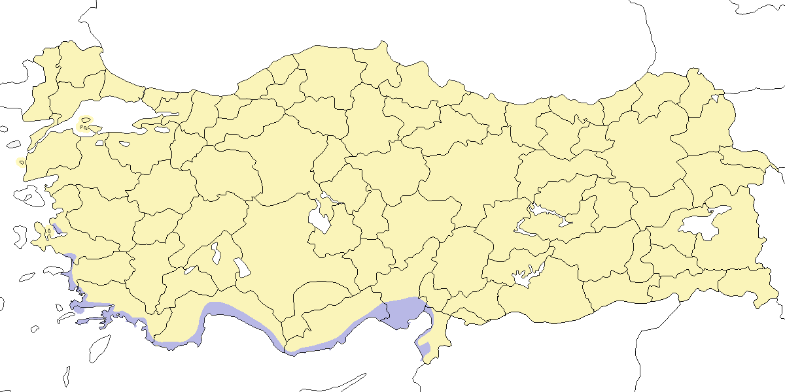

17 Dağbülbülleri - İncirkuşları
Büyük Dağbülbülü
Prunella collaris, Alpine Accentor
Lokal olarak nispeten az sayıda görülen yerli ve irtifa göçmenidir.
Doğu Karadeniz kıyıları, Marmara, Ege (muhtemelen Bozdağ), Akdeniz ve Doğu Anadolu’daki yüksek rakımlarda lokal olarak bulunur. Mevcut kayıtlardan daha yaygın olabileceği düşünülmektedir. Ağaç sınırı ile kar sınırı arasında, çıplak ya da kayalık yamaçlardaki alpin çayırları tercih eder. Üreme yüksekliği batıdan doğuya doğru artış gösterir: Marmara’da 1900 m’nin üzerinde, Toroslar’da 3500 m’ye kadar, Doğu Anadolu’da ise Süphan Dağı’nda 4200 m’ye kadar ulaşır. Toroslar’da zaman zaman 1400 m gibi düşük rakımlarda da görülebilir1. Kaçkarlar, Toroslar’ın doğu kesimleri ve Muğla–Antalya arasındaki batı Toroslar’da özellikle yaygındır. Uludağ ve Ilgaz Dağları gibi alanlarda ise nadirdir. Üreme sezonunda İran sınırındaki İshak Paşa Sarayı çevresi ve Van Gölü’nü çevreleyen dağlık bölgelerde birçok kaydı vardır.
Kış dönemine dair bilgiler oldukça sınırlıdır. Bu mevsimde irtifa göçü yaptığı ve muhtemelen sınırlı da olsa kuzey-güney yönlü hareket ettiği düşünülmektedir. Akdeniz Bölgesi’nde 200 m gibi düşük rakımlarda da kaydedilmiştir2.

Üreme
Yuvalama alanı: Ağaç sınırının üstünde, genellikle 2400 metreden yüksek dağ zirvelerinin yakınlarında, 4200 metreye kadar olan kayalık ve engebeli alpin çayırlarda ürer. Sıklıkla çalı bulunmayan sarp kayalıkların, büyük taşların ve çarşakların yakınında yuva yapar.
Yuvası: Kayaların altındaki boşluklara veya çatlaklara, kuru ot sapları ve kökçüklerden yaptığı kâse biçimli yuvayı ince otlar, biraz kıl ve hayvan kürkü ile astarlar. Yuvada genellikle yosun ve liken bulunmaz.
Yumurta sayısı: Türkiye’de iki yuvada üç ve dört yumurta sayılmıştır. Diğer bölgelerde olağan yumurta sayısı 3–4, nadiren 5’tir. Yılda iki kez kuluçkaya yattığı bilinmektedir.
Üreme dönemi: Üreme genellikle mayıs sonunda başlar, bazı bölgelerde mayıs başı kadar erken tarihlerde gözlenmiştir. MAR. 29–30 Mayıs 1966’da Uludağ zirvesine yakın bölgede üç çiftin öttüğü ve kur davranışı sergilediği kaydedilmiştir3. KAD. 14 Haziran 2004’te Sivrikaya’da, 2900 metrede karla kaplı dik bir yamaçta bir yuva bulunmuş, 24 Haziran’da aynı yuvada 1–2 günlük dört yavru görülmüştür. Bu gözlem yumurtlamanın yaklaşık 3 Haziran’da gerçekleştiğini göstermektedir. 15 Haziran 2006’da Sivrikaya’da, yerden 3 metre yüksekteki bir taş duvarda üç yumurtalı başka bir yuva bulunmuştur. 12 Temmuz 1986’da Sivrikaya yakınlarında genç bireyler, 9 Ağustos 1992’de aynı bölgede iki aile grubu, 14 Ağustos 1972’de İspir yakınlarında bir dişi ve genç, 13 Temmuz 1975’te İspir ve Rize arasında yaklaşık 30 birey kaydedilmiştir. Bu gözlemde beslenen gençlere dayanarak yumurtlamanın 9 Haziran civarında gerçekleştiği düşünülmektedir. Haziran ortasından ağustos başına kadar Sivrikaya çevresinde 40 bireye kadar yüksek sayılar kaydedilmiştir. Temmuz ayında Kaçkarlar’daki Dilberdüzü ve Büyükdağ Düzü’nde türün bol olduğu belirtilmiştir. AKD. Ağustos 1966’da Karanfil Dağı’nda 3000 metrede ve 17–23 Temmuz 1971’de Torosdağı’nda 2450 metrede genç bireyler gözlenmiştir. DOA. 9 Haziran 1989’da Bitlis Nemrut Dağı’nda genç bir birey gözlenmiş, bu erken tarih yumurtlamanın mayıs başında gerçekleştiğini göstermektedir. Temmuz 1966’da Süphan Dağı’nda, 4200 metrede çok sayıda birey kaydedilmiştir.
Alttürler ve Sınıflandırma
Doğu Anadolu’da4 ve muhtemelen Güney Marmara ile Batı Karadeniz’de1 montana alttürünün bulunduğu düşünülmektedir. Toroslar’da ise subalpine alttürünün varlığı öne sürülmektedir. Bu bölgeden incelenen örneklerde, üst taraflardaki kızıl çizgilenmenin yoğunluğu ve genişliği ile boğaz tüylerinin uçlarındaki koyuluk (yıpranma etkisinden bağımsız olarak) montana alttürüyle uyum göstermektedir.
Sibirya Dağbülbülü
Prunella montanella, Siberian Accentor
Rastlantısal konuktur.
İki kaydı vardır: 2 Kasım 2006’da İstanbul Rumelifeneri’nde bir birey fotoğraflanmış5, 12 Ekim 2007’de ise Erzurum yakınlarındaki Gelinkaya’da bir birey gözlenmiştir. Avrupa’da en az sekiz ülkede rastlantısal olarak kaydedilmiş6, ayrıca Lübnan’da da bir gözlemi bulunmaktadır7.

Üreme
Türkiye’de yuvalamaz. Üreme dönemi yayılış alanı Kuzey Asya’dır. Kışı Kuzeydoğu Çin’de geçirir.
Alttürler ve Sınıflandırma
Türkiye’de gözlenen bireylerin büyük olasılıkla nominat alttür montanella olduğu düşünülmektedir.
Sürmeli Dağbülbülü
Prunella ocularis, Radde’s Accentor
Lokal olarak çok sayıda bulunan yerli ve irtifa göçmenidir.
Ağaç sınırının üzerinde ürer. Aladağlar, Güneydoğu Anadolu ve Doğu Karadeniz’de 1900–2700 m, Doğu Anadolu’da ise genellikle 2100–3000 m arasında, nadiren 4000 m’ye kadar çıkan taşlık ve çalılı yamaçlarda görülür. Geven (Astragalus) türlerinin bulunduğu yamaçları sever. Batıdaki en uç yayılış sınırları Bolkar ve Melendiz Dağları olarak görünmektedir8. Güneydoğunun uç kesimlerinde, özellikle Hakkâri çevresinde, örneğin Başkale ve Karabel Geçidi yakınlarında, yer yer bol sayıda birey bulunur.
En azından bir kısmı kışın daha düşük rakımlara iner. Bu dönemde düzenli olarak Birecik ve Hatay’da kaydedilmiştir. Türkiye’de üreyen bireylerin, ekim–kasım aylarında İsrail’in kuzeyinde kışlayan az sayıdaki bireylerin kaynağı olduğu düşünülmektedir9. Ayrıca, Lübnan’da ağustos başında kaydedilmiş olması10, bazı bireylerin üreme alanlarını oldukça erken terk ettiğini göstermektedir.

Üreme
Yuvalama alanı: Yüksek dağlarda, ağaç sınırının üzerinde, genellikle 2000 metreden yüksek taşlık ve kayalık yamaçlarda ürer. Alçak çalılar, ardıçlar veya uzun ot kümeleri arasında, yerden genellikle 0,2–0,3 metre yüksekte yuva yapar.
Yuvası: Dallar, ince kökler ve bitkisel havlardan yaptığı kâse biçimli yuvasını kılla kaplar.
Yumurta sayısı: Türkiye’de iki yuvada 3, iki yuvada 4 yumurta kaydedilmiştir. İki yuvada 3, üç yuvada 4 yavru gözlenmiştir.
Üreme dönemi: Yumurtlama genellikle mayıs başında başlar, temmuz sonuna kadar sürer. AKD. Demirkazık’ta 21–27 Mayıs arasında, içinde yavru bulunan beş yuva gözlenmiş, yumurtlamanın mayıs başı–ortasında gerçekleştiği belirlenmiştir. 21 Mayıs 1993 ve 28 Mayıs 1998’de yuva yapımı gözlenmiş, ardından 8 Haziran’da dört yumurtalı bir yuva kaydedilmiştir. 12 Mayıs 2004’te üç yumurta bulunan bir yuvada, 13 Mayıs’ta dört yumurta görülmüş ve 25 Mayıs’ta yeni çıkmış bir yavru gözlenmiştir; bu durum 12 günlük kuluçka süresini doğrulamaktadır. 6 Haziran 1991 ve 10 Haziran 1994’te çiftlerin yuvaya yiyecek taşıdığı, 26 Mayıs 1985, 26 Mayıs 1986, 6 Haziran 1993 ve 16 Haziran 1985’te yavrulu çiftler kaydedilmiştir. 28 Haziran 1966’da üç yavrulu bir yuvadaki bireylerin tümü tüylenmiştir. Olası ikinci kuluçka kayıtları ise 27 Haziran 1966’da iki yumurtalı, 29 Haziran’da üç yumurtalı yuvalar ve 8 Temmuz 1976’da üç yavrulu bir yuva ile belgelenmiştir. Ayrıca 24 Temmuz 1986, 12 Ağustos 1998 ve 25 Ağustos 1986’da gençlerle birlikte erişkin bireyler gözlenmiştir. İÇA. 1 Ağustos 1970’te Erciyes Dağı’nda yavrusunu besleyen bir çift kaydedilmiştir. DOA. 5 Haziran 2001’de Bitlis Nemrut Dağı’nda yuva yapımı, 8 Haziran 2004’te alçak bir çalı içinde bir yumurtalı yuva, 9 Haziran 1989’da bir ardıçtaki yuvada bir yavru ve 8 Temmuz 1986’da tüylenmiş bir yavru gözlenmiştir. 21 Mayıs 1989’da Yüksekova’da üç yumurtalı bir yuva bulunmuş, 31 Mayıs 1969’da Van Görentaş yakınlarında çiftleşme gözlenmiştir.
Alttürler ve Sınıflandırma
Monotipik bir türdür.
Kara Boğazlı Dağbülbülü
Prunella atrogularis, Black-throated Accentor
Rastlantısal konuktur.
2015 yılında Kızılırmak Deltası’ndaki halkalama istasyonunda bir birey yakalanmış ve fotoğraflanmıştır11. Ayrıca, 2 Kasım 2017 tarihinde Iğdır’daki Aras Kuş Halkalama İstasyonu’nda bir birey kaydedilmiştir.

Üreme
Türkiye’de yuvalamaz. Ural Dağları ve Altay Dağları’nda yuvalar, kışı Orta Asya’da geçirir.
Alttürler ve Sınıflandırma
Monotipiktir.
Dağbülbülü
Prunella modularis, Dunnock
Lokal olarak az sayıda yaz göçmeni, yaygın olarak çok sayıda bulunan kış göçmeni ve geçit türüdür.
Batı ve Doğu Karadeniz’in büyük bölümünde, açık karışık ya da ibreli ormanların alt katmanlarında, orman kenarlarında veya ağaç sınırına yakın alpin çalılıklarda ürer. Üreme alanı kuzeyde Bursa (Uludağ’da 1500–2500 m) ile Artvin (Kaçkarlar’da 1000–2700 m) arasında uzanır. Kastamonu ve Bolu çevresinde çoğunlukla 1700–2700 m arasında ürer1, ancak zaman zaman daha düşük rakımlarda da kaydedilmiştir. Trakya, Kaz Dağı ve İç Anadolu’nun kuzey sınırında üremesi olasıdır. Güneyde mayıs başından önceki kayıtlar geç göçmenlere ait olabilir, ancak az sayıda ve lokal olarak Toroslar’da da ürediği düşünülmektedir. Nitekim Aladağlar’da (Akdeniz) mayıs sonu ile ağustos sonu arasındaki kayıtlar bu olasılığı desteklemektedir. Doğu Anadolu’daki geniş dağlık bölgelerde türün varlığı daha detaylı araştırılmalıdır. Öte yandan, üreme sezonunda Güneydoğu Anadolu’dan herhangi bir kayıt bulunmamaktadır.
Kış aylarında Batı ve Orta Anadolu’nun düşük rakımlı bölgelerinde oldukça yaygındır3 ve Güneydoğu Anadolu’nun uç kesimlerine kadar ulaşır. Göçmen bireyler Marmara, Ege, Akdeniz ile sınırlı sayıda da olsa İç ve Doğu Anadolu’da (örneğin Süphan Dağı) düzenli olarak gözlenir. Kısmen göçmen olan popülasyonlar lokal olarak Ege ve İç Anadolu’ya kadar yayılım gösterebilir.

Üreme
Yuvalama alanı: Orman içlerinde ve kenarlarında, orman altı örtüsünde, alçak çalılıklarda ve ağaç sınırının üzerindeki çalılıklarda ürer.
Yuvası: Bodur bir ağacın ya da çalının içinde, ince dallar, otlar, yapraklar ve yosundan yaptığı kâse biçimli yuvayı kıl ve yosunla kaplar.
Yumurta sayısı: Türkiye’de bir yuvada dört yumurta ve aynı yuvada dört yavru kaydedilmiştir. Diğer bölgelerde olağan yumurta sayısı 4–5’tir. Tür başka yerlerde genellikle yılda iki hatta üç kez kuluçkaya yatar.
Üreme dönemi: Yumurtlama genellikle nisan ortasında başlar, yavrular mayıs sonunda çıkar. MAR. 20 Eylül 1966’da Uludağ zirvesine yakın bölgede hâlâ öten erişkinler kaydedilmiş, bu durum bölgede ikinci veya üçüncü kuluçkaya işaret edebilir. KAD. Abant Gölü’nde, alçak bir böğürtlen çalısında bulunan Türkiye’deki tek yuvada, 29 Mayıs 1992’de dört yumurta, 3 Haziran’da yeni çıkmış dört yavru gözlenmiştir. Yumurtlamanın mayıs ortasında gerçekleştiği anlaşılmıştır. 8 Mayıs 1970’te Çamlıhemşin’de yiyecek taşıyan bir erişkinin görülmesi yumurtlamanın nisan ayında gerçekleştiğini göstermektedir. Çamlıhemşin Ardeşen’de lokal olarak üreyen bireylerin en çok mayıs ortasında öttükleri bildirilmiştir12. İÇA. Kızılcahamam’da mart–haziran döneminde öten kuşlar duyulmuştur13.
Alttürler ve Sınıflandırma
Marmara’nın güneyinden gelen bireyler ve muhtemelen Batı Karadeniz’deki kuşlar Türkiye’ye endemik euxina alttürüne, Karadeniz’in kuzeydoğusundakiler ise obscura alttürüne dâhil edilmiştir4. Kış aylarında Trakya’da görülen bireylerin, muhtemelen meinertzhageni ve belki de modularis alttürlerine ait olabileceği ileri sürülmüştür. Robson tarafından şubat ayı sonunda toplanan ve Tring Doğa Tarihi Müzesi’nde bulunan bir örnek (88 April 1920.1244) modularis alttürüne ait olabilir. İncelediğimiz diğer Türkiye örnekleri ise alttür düzeyinde güvenle tanımlanamamaktadır. Alt taraf tüy rengi gibi bazı değişken özellikler farklılık gösterse de, bu varyasyonların tanımlanmış alttürlerle tam olarak örtüşmediği görülmektedir14.
Serçe
Passer domesticus, House Sparrow
Yaygın olarak çok sayıda bulunan yerlidir.
Gözlemcilerin dikkatini çeken bir tür olmadığı için, mevcut durumu ve yayılışı iyi bilinmemektedir. En az 2700 m yüksekliklere kadar ürediği bilinir, yükseklerde genellikle söğüt serçesiyle karışık küçük koloniler oluşturur. Kızılırmak Deltası’nda 1992 ilkbaharında tahminen 1500-3000 üreyen çift kaydedilmiştir15. Ağaç serçesi ve bu tür arasındaki melezleşme sadece iki defa kaydedilmişken, söğüt serçesiyle olan belirgin melezleşme oldukça yaygın olup, birçok alanda gözlenmiştir. Sonbahar ve kışın yapmış oldukları göç hareketlerinin sınırları çok az bilinmesine rağmen, bu mevsimlerde söğüt serçeleriyle büyük ve karışık sürüler oluştururlar. Bu mevsimde Toroslar’da özellikle 2000 m altına indiği bilinmektedir. Doğudaki bazı bölgelerde yerleşimlerden uzakta da bulunur.

Üreme
Yuvalama alanı: Yerleşim yerlerinde, tarım arazilerinde ve ormanlık alanlardaki köy ve kasabalarda ürer. Bazen yerleşim yerlerinden uzak izole binalarda da yuva yapar.
Yuvası: Genellikle bina duvarlarındaki çatlaklarda, viyadüklerde, duvarlarda, kavak ve okaliptüs gibi ağaçların dallarında ya da yuva kutularında yuva yapar. Sık sık kaya sıvacısı, ev kırlangıcı ve arıkuşu yuvalarını da kullanır. Leylek yuvalarının altına 15 çifte kadar küçük yuvalar yaptığı kaydedilmiştir. Yuvalar kubbe şeklinde, yandan girişlidir; saman, ot, bitki sapı, yün ve kâğıt gibi malzemelerle yapılır ve genellikle tüy ve yünle astarlanır. Deliklere yapılan yuvalar gevşek yapılı ve kâse biçimindedir.
Yumurta sayısı: Ankara çevresinde 1976–1985 yılları arasında yapılan bir çalışmada ortalama 4,7 yumurta bırakıldığı ve tüylenmiş yavru sayısının ortalama 4,5 olduğu belirlenmiştir16. Türkiye’de İzmir ve Göksu’da 5 yumurtalı, Göksu’da ayrıca 6 yumurtalı yuvalar, İzmir’de ve Karine Gölü yakınlarında ise 4–5 yavrulu yuvalar kaydedilmiştir.
Üreme dönemi: Üreme genellikle nisan–mayıs aylarında başlar ve tür yılda 2–3 kez kuluçkaya yatar. MAR. 17 Haziran 1973’te Bebek’te tüylenmiş yavrular, Karacabey’de 20 Mayıs civarında yumurtalanmış bir yuvada erişkinin yavru beslediği gözlenmiştir. EGE. 21 Mayıs 1951’de İzmir’de biri kuluçkada 5 yumurta içeren, diğeri yavrulu iki yuva kaydedilmiş, Karine Gölü yakınlarında 9 Mayıs 2003’te birçok yuvada büyümüş yavrular görülmüştür. Akköy yakınlarında 1 Haziran 2004’te muhtemelen ikinci kuluçkaya ait boş bir yuva saptanmıştır. AKD. 5 Mayıs 2004’te Göksu Deltası’nda inşaat hâlindeki bir binada 5 yumurtalı bir yuva, 6 Mayıs 2004’te Taşucu’nda tüylenmiş yavrular bulunan bir yuva kaydedilmiştir. 6 Mayıs 2005’te Göksu’da 6 yumurtalı bir yuva ve 11 Mayıs 2005’te hem yavrulu hem de yumurtalı birçok yuva gözlenmiştir. 12 Haziran 2006’da Adana yakınlarında yılın ikinci kuluçkası için çiftleşen erişkinler görülmüştür. KAD. 12 Haziran 2004’te İspir’de yavrulu bir yuva kaydedilmiştir. İÇA. Ankara çevresindeki çalışmalarda nisan ortasından itibaren yoğun üreme gözlenmiştir16. DOA. Haziran ayında aktif koloniler kaydedilmiş, ancak kesin tarihler belirtilmemiştir. GDA. 6 Mayıs 1970’te Ceylanpınar’da, yumurtlamanın nisan başında gerçekleştiği bir yuvada tüylenmiş yavrular kaydedilmiştir.
Alttürler ve Sınıflandırma
Alttür düzeyindeki coğrafi varyasyonları ve popülasyonları ayırt etmek oldukça zordur. Batı ve iç bölgelerde balearoibericus, Karadeniz kıyısı boyunca domesticus, Erzurum ve Van’ın doğusundaki Doğu Anadolu’nun dağlık bölgelerinde ise endemik olarak tanımlanan mayaudi alttürü kaydedilmiştir4. Ancak Van’da mayaudi adıyla tanımlanan bu alttür artık geçerli kabul edilmemektedir. Güneydoğu Anadolu’da, Birecik’ten Ceylanpınar’ın doğusuna kadar uzanan bölgede, Doğu Akdeniz, Suriye ve İran’daki popülasyonlarla uyumlu olan biblicus alttürü görülmektedir. Türkiye’nin kuzey ve doğusundaki diğer bölgelerinde bulunan alttürün hangisi olduğu ise henüz netlik kazanmamıştır, çünkü bu bölgelerden yeterli müze materyali bulunmamaktadır. Kuzeydoğu Anadolu’daki Artvin ve Güney Gürcistan’da tanımlanmış colchicus alttürü ise geçerli kabul edilmemektedir17. Summers-Smith18, Türkiye’deki tüm serçelerin biblicus alttürüne ait olduğunu öne sürmüştür. Bu nedenle, Anadolu’daki taksonomik durum oldukça karmaşık olup detaylı bir çalışma gerektirmektedir.
Söğüt Serçesi
Passer hispaniolensis, Spanish Sparrow
Yaygın olarak çok sayıda bulunan yaz göçmeni ve geçit türüdür. Az sayıda kışlar.
En yaygın olduğu bölgeler Marmara, Ege, Batı Karadeniz ve İç Anadolu’dur. Akdeniz ve Güneydoğu Anadolu’da ise yerli bir tür olarak bulunur. Suriye sınırındaki Karkamış’ta, Fırat Nehri boyunca çok büyük bir koloni vardır. Doğu bölgelerde seyrek ve lokal dağılım gösterir. Örneğin, 2 Nisan 1964’te Siirt’te yaklaşık 300 çiftten oluşan bir koloni gözlenmiştir19. Yakın yıllarda, Ceylanpınar’da ise binlerce çiftten oluştuğu tahmin edilen koloniler kaydedilmiştir. Bu tür, çok küçük alanlarda yüzlerce çifti barındırabilen koloniler kurabilir. Örneğin, Mayıs 1965’te Tarsus’un güneyinde yaklaşık 10.000 çiftten oluşan bir koloni bildirilmiş20, 1987’de ise aynı bölgede çok daha büyük sayılarda yuva yapan bireylerin bulunduğu kaydedilmiştir21. Genellikle 1500–2000 m yüksekliğe kadar olan düzlüklerde ve tarım alanlarında yuva yaparlar; serçelerin aksine, yuvalama için binalardan uzak dururlar.
Göç dönemlerinde tür, toplu hâlde daha yaygın hâle gelir. Sürüler genellikle binlerce bireyden oluşur. Örneğin, Eylül 1972’de Uluabat Gölü’nde 50.000–100.000 bireylik bir sürünün büyük bölümünün bu türden olduğu değerlendirilmiştir. Aynı bölgede, 22 Eylül 1990’da en az 15.000 bireylik bir sürü kaydetmiştir22. Bahar göçü mart ve nisan aylarında, bazen mayısa kadar sürerken; sonbahar göçü ağustostan kasım başına kadar devam eder. Kışın, güney ve batı bölgelerde düzensiz olarak az sayılarda, İç Anadolu’da ise düzenli olarak görülür. Bu mevsimde çok nadiren büyük sürüler hâlinde kaydedilir.

Üreme
Yuvalama alanı: Tarım arazilerinde, özellikle alçak ovalarda ve vadilerde, yerleşim yerlerinin çevresinde ya da ıssız bölgelerde ürer. Genellikle ağaçlar, koruluklar, ekili ormanlar, sıra hâlinde dikilmiş ya da tek başına duran ağaçlar ve Çukurova bölgesindeki okaliptüs ağaçlarında yuvalar. En sık yuva yaptığı ağaçlar arasında kavak, söğüt, akasya, çınar ve servi bulunur. Sıklıkla leylek, gri balıkçıl veya kızıl şahin gibi iri kuşların çöplerden yaptığı yuvaların altında, yüksek çalılıklarda ürer.
Yuvası: Yol kenarındaki böğürtlen çalılıklarında, tarım arazilerindeki binalarda, Trakya’da ev kırlangıcının yuvasında ve Silivri’de dik toprak duvarlarda da yuva yaptığı kaydedilmiştir15,23. Koloniler genellikle 30–150 çiftten oluşur. 6 Haziran 1970’te Marmara Gölü yakınlarında bir kolonide 800 eski yuva tespit edilmiş, Çukurova’da ise binlerce bireyden oluşan koloniler gözlenmiştir21. 5 Haziran 1966’da Manyas Gölü’nde 17 gri balıkçıl yuvasının altında 37 yuva, tek bir leylek yuvasının altında ise dalların arasını tamamen dolduracak şekilde yaklaşık 50 yuva kaydedilmiştir24. Serçe ve söğüt serçesiyle birlikte karışık koloniler oluşturur. Ağaç dallarının çatallarına, hatta büyük kolonilerde birbirine temas eden yuva yığınları inşa eder. Biçimsiz, kubbe şekilli ve yandan girişli olan yuvalar yuvalama döneminin başlarında genellikle yeşil bitkilerle örülür ve sıkça kalınca yünle astarlanır.
Yumurta sayısı: Türkiye’de yuvalarda 4 ila 7 yumurta sayılmıştır. Yavru sayısına dair doğrudan bilgi bulunmamaktadır.
Üreme dönemi: Üreme nisan başında başlar, haziran boyunca devam eder ve ağustos sonuna kadar aktif koloniler görülür. Genellikle yılda iki kez kuluçkaya yatar. MAR. 18–26 Haziran 1973’te dört farklı alanda erişkin bireylerin yuvaya yiyecek taşıdığı gözlenmiş, üçü kavaklarda olmak üzere toplam yedi koloni tespit edilmiştir. EGE. 11 Mayıs 1950’de İzmir yakınlarında incelenen birçok yuvada yarısı tamamlanmış yapılar, bazılarında ise 5–6 yumurta tespit edilmiştir. Bu gözlemler, ilk yumurtanın nisan sonunda bırakıldığını göstermektedir. 17 Mayıs 1951’de yine İzmir’deki bir kolonide, hem eksik hem de tamamlanmış yumurtalı ve yavrulu yuvalar gözlenmiş, bu da ilk yumurtlamanın nisan başında gerçekleştiğine işaret etmiştir. 24 Mayıs 1951’de çoğu yuvada 3–7 yumurta bulunmuş, dört ve beş yumurtalı yuvalarda kuluçkanın yeni başladığı gözlenmiştir. 31 Mayıs 1954’te aynı kolonideki yuvaların çoğunun 5 yumurtalı olduğu, bazı yuvaların ise boş olduğu kaydedilmiştir. 20 Mayıs 1999’da Akköy yakınlarındaki bir kolonide hem yumurtalı hem de yavrulu yuvalar gözlenmiştir. 11 Mayıs 1899’da Denizli Acıgöl yakınlarında boş ama yapımı tamamlanmış yuvalar bulunmuştur24. 15 Mayıs 1899’da İzmir yakınlarında 100 yuvalık bir kolonide, çoğu yuvada 6 yumurta tespit edilmiştir. AKD. 1 Mayıs 1964’te Amik Gölü’nde incelenen 8 yuvadan biri boş, diğer yedisi eksik ya da tamamlanmış yumurtalı olarak kaydedilmiştir25. İÇA. 23 Nisan 1964’te Cihanbeyli yakınlarında yuva yapımının henüz başlamadığı, ancak 50 erişkin bireyden oluşan bir sürü gözlenmiştir. 9 Mayıs 1964’te Sarayönü’nde birçok yuvanın yeni yapıldığı ya da henüz tamamlanmadığı kaydedilmiştir25.
Alttürler ve Sınıflandırma
Türkiye’deki kuşlar, genellikle nominat alttür hispaniolensis ile transcaspicus alttürü arasında geçiş formu olarak kabul edilir. Marmara, Ege ve Göller Bölgesi gibi batı bölgelerinde bulunan daha küçük gövdeli bireyler hispaniolensis olarak değerlendirilirken, Göksu ve Çukurova deltalarında görülen ve doğuda Başkale’ye, kuzeyde Yukarı Murat Vadisi’ne kadar uzanan daha iri yapılı bireyler transcaspicus alttürüne dâhil edilmiştir4. Buna karşın, Kumerloeve Ceylanpınar’a kadar olan doğu yayılımını hispaniolensis olarak tanımlamış, ancak daha önce tüm Anadolu popülasyonlarının alttür açısından belirlenemez olduğunu savunmuştur20,26. Batı Akdeniz, Karadeniz ve İç Anadolu’nun büyük bir bölümünden tahnit örneği incelenmeden, hispaniolensis alttürünün İç Anadolu’nun büyük kısmında, en azından Tuz Gölü’nün güneyi ve doğusunda bulunan transcaspicus alttürüyle birlikte Karadeniz Bölgesi’nde de bulunabileceğini öne sürülmüştür4. Ancak bu durum tartışmalıdır, çünkü transcaspicus, özellikle dişilerde, sadece tüy değişimi sonrasında tespit edilebilecek düzeyde daha soluk ve daha az kestane rengi barındıran bireylerle ayırt edilebilir18. Bu düzeydeki coğrafi varyasyonlar için alttür ismi vermek çoğu zaman gerekli görülmemektedir.
Küçük Serçe
Passer moabiticus, Dead Sea Sparrow
Lokal olarak az sayıda görülen yaz göçmenidir.
Güneydoğu Anadolu’nun alçak düzlüklerinde yaygın fakat genellikle az sayıda ve küçük gruplar hâlinde görülür. Ayrıca Doğu Anadolu’da yalnızca bir lokaliteden kaydı vardır. Nisan ve temmuz ayları arasında, ırmak veya kanal kenarlarında, su kenarındaki çalılarda ya da tarım arazilerinde 100 bireye ulaşan dağınık gruplar hâlinde ürer. Diğer bölgelerdeki popülasyonlarından farklı olarak Türkiye popülasyonu, yuvalama için canlı ve yeşil ağaçlara ihtiyaç duyar18. Fırat Nehri kıyısındaki Birecik’te, şu an daha da büyümüş olan yaklaşık 100 yuvalık bir koloni ilk kez 1964’te kaydedilmiştir27; bu koloni ertesi yıl aynı yerde yeniden tespit edilmiştir28. Daha sonra Kahramanmaraş’ın güneyindeki Gavur Gölü’nde ve Ceylanpınar’daki Habur Deresi çevresinde de koloniler gözlenmiştir29. 1968 ve 1972 yıllarında Ceyhan Nehri boyunca (Çukurova)30 ve 1970’te varlığı tespit edilen, 1972’de ise ürediği kesinleşen Göksu Deltası’nda da31 türün ürediği bilinmektedir. Malatya’daki tek kayıt, Fırat Nehri kıyısındaki Kale ilçesinden bildirilmiştir32. Günümüzde yalnızca Birecik ve Ceyhan’daki koloniler bilinir. Göksu Deltası’ndaki küçük popülasyon ortadan kaybolmuştur. Ceylanpınar’daki koloni, 1968 ile 1977 yılları arasında gözle görülür şekilde artış göstermiştir33.
Türkiye popülasyonu, Orta Irak ve Güneybatı İran’daki üreme popülasyonlarının bir uzantısıdır4,18. 1960 öncesinde Türkiye’den kaydının bulunmaması muhtemelen gözlem eksikliğinden kaynaklanmaktadır34. Kıbrıs’taki yeni kolonilerin keşfi35, türün batıya doğru yayılımda olduğunu gösterir. Akdeniz Bölgesi’nde görülen bireylerin kökeni kesin olarak bilinmemekle birlikte, Gaziantep üzerinden Fırat kolonilerinden batıya yayılmış olmaları muhtemeldir4.
Kışlama davranışı hakkında bazı bilgiler mevcuttur18,36. Kıbrıs’taki popülasyon göçmen, İsrail’deki ise kısmen göçmendir. Türkiye’den, üreme mevsimi dışında yalnızca bir gözlem vardır: Tarsus’tan37. Birecik’te kasım sonu ve aralık başında kaydedilmiş ancak kış boyunca gözlenmemiştir. İlkbaharda bölgeye geliş en erken 6 Nisan’da kaydedilmiştir. Çukurova’daki bireyler bazı yıllarda mart başında gözlenmiş, diğer yıllarda ise nisan başına kadar bölgeye ulaşmamıştır. Eylül sonuna kadar kaldığı bilinmekle birlikte kışın tam olarak ne zaman göç ettikleri bilinmemektedir. Doğu Arabistan’da kış aylarında büyük sayılarda görülmesi38, Türkiye ve Irak popülasyonlarının kışlama alanlarını açıklayabilir.

Üreme
Yuvalama alanı: Genellikle nehir boylarındaki çalılıklar ve ağaçlık alanlar ile sel basan düzlüklerde ürer. Başlıca yuvalama habitatları arasında söğüt, kavak, ılgın ve okaliptüs ağaçları ile çamlıklar ve zeytinlikler yer alır. Yuvası: Yuvalar genellikle 4–5 metre yüksekteki bir ağaç veya çalıya yapılır. 52 yuvada bu yükseklik doğrulanmış, bazı yuvaların 12 metre kadar yükseğe, bazı yuvaların ise yalnızca 2 metre kadar alçaklara (4 yuvada) yapıldığı görülmüştür. Futbol topu büyüklüğünde olan yuvalar, çerçöp ile yuvarlak biçimde inşa edilir ve yukarıdan girişlidir. İç kısmı tüy, kıl ve yumuşak malzemelerle astarlanır. Halfeti çevresinde bazı eski yuvaların Çizgili İshakkuşu tarafından yeniden kullanıldığı tespit edilmiştir39. Yumurta sayısı: Türkiye’de üç yuvada 5 yumurta, dört yuvada 6 yumurta ve bir yuvada 7 yumurta sayılmıştır. İki yuvada 5 yavru, bir yuvada ise 6 yavru gözlenmiştir. Üreme dönemi: Yumurtlama genellikle mayıs ortasında başlar ve temmuz sonuna kadar iki kuluçkayı kapsayabilir. GDA. Aşağıda aksi belirtilmedikçe verilen tüm kayıtlar Birecik çevresindendir. 8–19 Nisan 1988 arasında erişkin bireylerin henüz bölgeye ulaşmadığı kaydedilmiş, mayıs başında ve 9–12 Haziran tarihlerinde yuva yapımının devam ettiği gözlenmiştir. Bu durum yılda iki kez kuluçkaya yatıldığını göstermektedir. 18 Mayıs 1993’te 5 yumurtalı bir yuva kaydedilmiş, aynı yuvada 6 Haziran’da büyümüş 5 yavru görülmüştür. 3 Haziran 1993’te incelenen 8 yuvadan ikisinde 5 yumurta, üçünde 6 yumurta, birinde 7 yumurta, birinde yeni çıkmış 6 yavru ve diğerinde yeni çıkmış 7 yavru bulunmuştur. Bu son iki kayda göre yumurtlamanın mayıs ortasında gerçekleştiği anlaşılmaktadır. 11 Mayıs 2004’te incelenen 14 yuvadan 11’i yeni yapılmış ama hâlâ boştaydı, biri bir yumurtalı, biri iki yumurtalı ve birinde ise 6 yumurta vardı. 3 Haziran 1970’te kur ötüşü yapan 50 erkek birey gözlenmiş, bu bireylerin en az ağustos başına kadar bölgede kaldığı tespit edilmiştir. Temmuz ve ağustos başında tüylenmiş yavrular ebeveynleri tarafından beslenmiştir. Bu da yılda iki kez kuluçkaya yatıldığını doğrulamaktadır. 3 Mayıs 2004’te Karkamış yakınlarında, Fırat Nehri üzerindeki adalarda erkek bireylerin girip çıktığı yuvalar gözlenmiştir. AKD. 29 Nisan 1972’de Göksu Deltası’nda sular altında kalmış ılgınlıklar içinde üç yuva kaydedilmiş, ancak detay verilmemiştir. 2–4 Temmuz 1970’te Ceyhan Nehri üzerindeki bir adada dört çift birey gözlenmiştir.
Alttürler ve Sınıflandırma
Türkiye’de nominat alttür bulunur. Öncesinde, Ceylanpınar ve Birecik popülasyonları araştırılmış, buradaki bireyler mesopotamicus adı altında tanımlanmıştır4. Ancak bu alttür, mesopotamicus olarak kabul edilmemiştir18. Güneydoğu Anadolu’da gözlenen bireyler ile Tring Doğa Tarihi Müzesi’nde bulunan Güneybatı İran ve Irak kaynaklı tahnit örnekleri morfolojik olarak nominat moabiticus ile tamamen örtüşmektedir. Ceylanpınar’dan topladığı örnekler de nominat moabiticus ile uyumludur20. Sonuçta, Güney Türkiye, Kuzey Suriye, Irak ve Güneybatı İran’daki bireyler için önerilen mesopotamicus adı nominat alttürün bir sinonimi olarak değerlendirilmiştir.
Ağaç Serçesi
Passer montanus, Eurasian Tree Sparrow
Nispeten yaygın olarak çok sayıda bulunan yerlidir.
Yerleşim alanlarının çevresindeki tarım arazilerinde, yer yer 1750 m yüksekliğe kadar ürer. Doğu Asya’da olduğu gibi, gelecekte Ankara gibi şehirleşmiş bölgelerde de üremesi muhtemeldir40. Kış aylarında orta ve batı bölgelerde daha yaygındır. Akdeniz Bölgesi’nde Kaş’ta eylül ayına ait bir kaydı vardır. Üreme döneminde Birecik’te ve Doğu Anadolu’nun en doğusunda, Iğdır’daki Aras Vadisi’nde de kaydedilmiştir.

Üreme
Yuvalama alanı: Genellikle kasaba ve köylerin yakınlarındaki tarım arazilerinde, park ve bahçelerde, bazen de koruluklarda ürer. Yuvası: Ağaç deliklerinde, özellikle ağaçkakan yuvalarında, binalarda, duvar aralıklarında ve bazen eski arıkuşu yuvalarında yuva yapar. Yuva, bitki gövdeleri ve otlardan yapılmış kubbeye benzeyen veya dağınık kâse biçimindedir; içi tüylerle astarlanır. Yumurta sayısı: Ankara çevresinde 1976–1985 yılları arasında yapılan bir çalışmada, ortalama 4,9 yumurta bırakıldığı, çift başına yuvadan uçurulan yavru sayısının ortalama 4,6 olduğu ve bir hektardaki üreme yoğunluğunun 1,1 çift olduğu belirlenmiştir16. Üreme dönemi: Yumurtlama nisan ayında başlar, tür yılda genellikle iki kez kuluçkaya yatar. İÇA. 21 Nisan 1967’de Eber Gölü’nde bir erişkinin söğüt ağacındaki bir deliğe girdiği görülmüş, mayıs sonlarında farklı yerlerde aktif koloniler kaydedilmiştir. 20 Mayıs 1975’te Nevşehir’de bir duvarda yaklaşık 20 çiftin birlikte ürediği gözlenmiştir. 20 Mayıs 2004’te Göreme’de bir çiftin eski bir Kaya Sıvacısı yuvasına yuva malzemesi taşıdığı kaydedilmiştir. Ankara civarında nisan ayında yuva yapımı gözlenmiş, ağustos başında aile grupları kaydedilmiştir41. AKD. 3 Haziran 1988’de Toroslar’da çiftleşen bireyler gözlenmiş, bir ev çatısında kuluçkaya yatan çiftler tespit edilmiştir. 13–14 Mayıs 2004’te Demirkazık’ta hem çiftleşme hem yuva yapımı kaydedilmiştir. KAD. Haziran başında Ilgaz, Tosya ve İspir’de aktif koloniler gözlenmiştir. 13 Haziran 1975’te Gümüşhane yakınlarında erişkin bir birey yuvaya yiyecek taşırken görülmüş, 12 Haziran 2004’te İspir’de bir erişkinin ağaçkakan deliğinden dışarı çıktığı kaydedilmiştir. Bu kayıtlar türün bölgede de yılda iki kez kuluçkaya yattığını göstermektedir.
Alttürler ve Sınıflandırma
Ülkenin kuzeyi ve doğusunda, Erzurum ve Elazığ’a kadar olan bölgelerde transcaucasicus alttürü bulunur. Diğer bölgelerdeki alttür durumu belirsizdir. Ankara, İç Anadolu ve muhtemelen Karadeniz Bölgesi’nde bulunan bireyler, montanus alttürüne benzer özellikler taşır. İstanbul’daki ve muhtemelen tüm Marmara ile Batı Karadeniz’deki bireyler transcaucasicus olarak tanımlanmıştır42. İç Anadolu’daki popülasyonların açıkça montanus olduğunu belirtmiştir4; ancak daha sonraki araştırmacılar bu bölgedeki bireyleri montanus ile transcaucasicus arasında melez olarak değerlendirmiştir. Türkiye’de bulunan tek alttürün montanus olduğunu öne sürenler de vardır18. Görüldüğü üzere, montanus ve transcaucasicus arasındaki farklılaşma değişkendir. Türkiye’nin doğusuna doğru gidildikçe, bireylerin özellikleri dilutus alttürüne yaklaşmaktadır.
Sarı Boğazlı Serçe
Gymnoris xanthocollis, Yellow-throated Sparrow
Lokal olarak az sayıda görülen yaz göçmenidir.
Genellikle Antep fıstığı bahçelerinde ya da meşe ormanlarında ürer. Sessiz ve dikkat çekmeyen davranışları nedeniyle çoğunlukla gözden kaçar. Bilinen yayılış alanı hâlen belgelenmekte olup, Güneydoğu Anadolu’daki tarımsal gelişmeyle birlikte genişlediği anlaşılmaktadır. Yayılış alanı içinde uygun habitatların çoğunda görülmektedir. Nisan sonundan temmuz ortalarına kadar kaydedilir. 1977 yılında Halfeti ile Birecik çevresinde ürediği belirlenmiştir43. 1996 yılında Fırat Nehri’nin batısında, Gaziantep Yeşilce’de bir bireyin videosu çekilmiştir. Daha yakın dönemlerde Cizre, Mardin, Batman ve Sason’da; ayrıca Mayıs 2004’te Antakya Kırıkhan’ın kuzeyinde ve Temmuz 2004’te Erzincan’ın İliç ilçesi yakınlarında uygun habitatlarda kaydedilmiştir. Son yıllarda Akdeniz Bölgesi’ndeki çeşitli alanlardan da kayıtlar alınmaya başlanmıştır.

Üreme
Yuvalama alanı: Genellikle Antep fıstığı bahçelerinde, özellikle alaca ağaçkakan tarafından açılmış ve yerden 2 metreden alçakta bulunan deliklerde yuvalar. Türkiye’de bu tür deliklerde yuvalandığı 15 yuvada belgelenmiştir. Yuvalama büyük ölçüde bu oyukların mevcudiyetine bağlıdır. Yuvası: Ot, yaprak, yün, ip ve benzeri malzemelerle yaptığı yuva gevşek yapılı bir kâse biçimindedir. Bazı durumlarda kubbe veya yarı kubbe şeklinde yuvalar da yapar; bu yuvaların boru biçiminde, açılı bir girişi olur. Ancak Birecik’te kaydedilen yuvaların yalnızca biri kubbe biçimindedir. Yumurta sayısı: Türkiye’de bir yuvada 3 yumurta, bir yuvada 4 yumurta, dört yuvada ise 5 yumurta tespit edilmiştir. Bir yuvada 4, bir diğerinde 5 yavru gözlenmiştir. Üreme dönemi: Yumurtlama genellikle mayıs sonunda başlar. 23 Mayıs 1990’da yuva yapımı gözlenmiş, 5–14 Haziran tarihleri arasında yumurtalı 13 yuva kaydedilmiştir. 14 Haziran 2001’de gözlenen bir yuvada küçük bir yavru, üç yumurta ve yumurtadan yeni çıkmış bir yavru bulunmuş, bu durum yumurtlamanın mayıs sonlarında gerçekleştiğini göstermektedir. 7 Temmuz 1986’da iki erişkin bireyin tüylenmiş bir yavruyu beslediği, temmuz ortasında genç bireylerin bölgede bulunduğu kaydedilmiştir. Üreme bölgelerinin bazı kısımlarında yılda iki kez kuluçkaya yattıkları bilinmektedir. Ancak 10 Ağustos gibi geç bir tarihte hâlâ ötüş sergileyen erkekler gözlenmiş olsa da, Türkiye’de yılda iki kez kuluçkaya yatıldığına dair kesin bir kanıt bulunmamaktadır.
Alttürler ve Sınıflandırma
Türkiye’de bulunan kuşların, İran ve Irak sınırlarına kadar yayılan transfuga alttürüne ait olduğu düşünülmektedir4, ancak bunu doğrulayacak herhangi bir müze örneği mevcut değildir. Tür, geleneksel olarak Petronia cinsi içinde sınıflandırılmış olsa da, tüylenme yapısındaki farklılıklar, fizyolojik özellikleri, yaşam alanı tercihleri ve Kaya Serçesi’nden ayrılan davranış özellikleri nedeniyle diğer üç Afrotropikal tür olan Sarı Benekli Serçe (Gymnoris pyrgita), Ak Kaşlı Serçe (Gymnoris superciliaris) ve Çalı Serçesi (Gymnoris dentata) ile birlikte Gymnoris cinsine alınmıştır4,44–46.
Kaya Serçesi
Petronia petronia, Rock Sparrow
Nispeten yaygın olarak az sayıda bulunan yerli ve kısmî göçmendir.
Ülkenin orta ve doğu kesimlerinde, çoğunlukla 2500 metreye kadar olan kayalık ve kurak bozkırlarda yerleşik olarak görülür; zaman zaman 3000 metreye kadar çıkar. Batıya doğru gidildikçe dağılımı daha lokal hâle gelir. Nisan sonunda dağınık koloniler hâlinde ürer; yavrular haziran başında yumurtadan çıkar. Kurak bozkırlarda, kasaba ve köylerde serçelere benzer şekilde ürediği de bilinmektedir.
Kışın çoğunlukla daha alçak bölgelere göçer ve bazen kıyılara kadar iner. Bu dönemde tepeli toygarlarla birlikte 500 bireye ulaşan sürüler oluşturabilir47. Genellikle kış aylarında Batı, Güney ve İç Anadolu’da daha sık görülür. Ancak 1000 metrenin üzerindeki alanlarda da büyük gruplar hâlinde kaydedilmiştir. Trakya’dan bilinen bir kaydı olmasa da, hemen yanındaki Yunanistan’dan kayıtlar mevcuttur.

Üreme
Yuvalama alanı: Dik yamaçlı açık dağlık araziler, geçitler, dev kayalıklar, tarım yapılan kayalık alanlar ve seyrek ağaçların bulunduğu düzlüklerde ürer. Genellikle tek çift ya da birkaç çiftten oluşan küçük koloniler hâlinde yuvalanır, ancak sayıları 50 çifti bulan dağınık koloniler de oluşturabilir.
Yuvası: Yuvayı dik yamaçlardaki çatlak ve deliklerde, nehir ve yol kenarlarındaki set ve yamaçlarda, ağaç kovuklarında, binalarda, duvarlarda, kuyu ve köprülerdeki oyuklarda yapar. Ayrıca kaya sıvacısı, ev kırlangıcı ve arıkuşu gibi türlerin eski yuvalarını da kullanır. Yuva yapımında bitki kökleri, ot ve ot kökleri kullanır; içi lif, kuş tüyü ve kılla astarlanır. Girintinin dar olduğu durumlarda yuva dağınık kâse biçiminde, geniş alanlarda ise kubbemsi olur.
Yumurta sayısı: Türkiye’de üç yuvada 5–7 yumurta, bir yuvada ise 7 yavru kaydedilmiştir.
Üreme dönemi: Yumurtlama genellikle nisan sonu–mayıs başında gerçekleşir ve tür Türkiye’de yılda iki kez kuluçkaya yatar. KAD. 1967 yılı mayıs ortasında Gerede’de ve 15 Temmuz 1975’te Bayburt’ta aktif yuvalar gözlenmiştir48. AKD. 9–10 Mayıs 1899’da boş ve yumurtaya hazır yuvalar ile 10 Mayıs 1899’da yumurtadan yeni çıkmış yavrulu bir yuva kaydedilmiştir24. Bu kayıtlar ilk yumurtaların yaklaşık 22 Nisan’da bırakıldığını göstermektedir. 23 Temmuz 1971’de çok geç tarihli aktif yuvalar tespit edilmiştir. İÇA. 1 Haziran 1975’te İncesu yakınlarında bir çiftin yuva malzemesi taşıdığı, 7 Haziran 1975’te bir erkeğin kur ötüşü yaptığı, 17–19 Haziran 1975’te çok sayıda yuvanın bulunduğu alanlar belirlenmiştir. 24 Mayıs 1988’de içinde tüylenmiş yavru olan bir yuva, 9 Haziran 1977’de yedi yumurtalı bir yuva49 ve 17–22 Haziran tarihleri arasında içinde yavru bulunan üç yuva kaydedilmiştir. DOA. 22 Haziran 2004’te Erzurum’da, 18 Temmuz 1974’te Bitlis’te yuva yapımı kaydedilmiş, 26 Haziran 2004’te Erçek Gölü yakınlarında eski bir binadaki yuvaya erişkin bir bireyin yavrulara yiyecek taşıdığı görülmüştür. 2 Ağustos 1986’da Van çevresinde iki aile grubu gözlenmiştir. GDA. Yumurtlama nisan başında gerçekleşir. 2 Mayıs 1964’te Birecik’te biri 5, diğeri 6 yumurtalı iki yuva bulunmuş, 8 Mayıs 1989’da yeni tüylenmiş yavrularını besleyen bir çift kaydedilmiştir25. Mayıs ve haziran aylarında toplam altı aktif yuva daha gözlenmiştir.
Alttürler ve Sınıflandırma
Ege ve Güney Marmara’daki kuşları nominat, İç ve Doğu Anadolu’nun kuzeyindeki bireyleri exigua ve Güneydoğu Anadolu’dakileri puteicola alttürüne dâhil etmiştir4. Kaya Serçesi’nin taksonomik varyasyonlarını ayırt etmek için kullanılabilecek morfolojik farklar son derece sınırlıdır50. Bu nedenle, birçok formun nominat alttürün sinonimi olarak değerlendirilmesi daha doğru bir yaklaşım olabilir.
Boz Serçe
Carpospiza brachydactyla, Pale Rockfinch
Yerel olarak az sayıda görülen yaz göçmenidir.
Hem açık çayırlıklarda hem de yarı bozkır alanlarda, kısmen çalılıklarla kaplı yamaçlarda, en çok da kayalık yamaçlarda görülür; zaman zaman bağlar ve tarım alanlarında da rastlanır. Bazı çekirdek alanlar, örneğin Gaziantep yakınlarındaki Yeşilce’de bulunan meyvelikler ve kayalık yamaçlar, yaklaşık 1935’ten beri düzenli olarak kullanılmaktadır51. Bu bölgelerde bazı yıllarda tür oldukça yaygın olabilir, ancak nadiren 60 bireye ulaşan sürüler oluşturur.
Geç gelen bir göçmendir; genellikle mayıs başı veya ortasında gelir, bazı yıllarda ise nisanın son haftasında görülmeye başlanır. En erken kayıt 10 Nisan’da Belen Geçidi’ndendir. Ağustos sonunda ülkeyi terk eder; sonbahara ait en geç kayıt 13 Eylül tarihindedir. İlkbahar göçü sırasında Çukurova’da da kaydedilmiştir. 1986 ve 2001 yıllarında Doğu Karadeniz’in güney sınırında gözlenmiştir. Bilinen üreme alanı dışındaki bireyler, büyük olasılıkla mevsimsel şartlara bağlı yer değiştirmeler ya da göçmen/akıncı bireylerin sabit yayılış alanının dışına taşmasıyla açıklanabilir52.

Üreme
Yuvalama alanı: Kuru kayalık yamaçlar, bozkır ve yarı bozkır alanlardaki taşlık düzlükler, çalılarla kısmen kaplı yamaçlar, tek ağaçların bulunduğu açık alanlar ve vejetasyonun zayıf olduğu diğer benzer habitatlarda ürer. Güneydoğu Anadolu’da 500–1200 metre arasında, Van ve Doğubayazıt çevresinde ise 2000 metreye kadar yuvalandığı bilinmektedir. Erzurum yakınlarında, geven çalılıkları ve otsu bitki örtüsüyle kaplı kuru ve taşlık vadilerde, açık çayırlıklarda ve bağ ve tarla içindeki çalılıklarda da görülmüştür43.
Yuvası: Yuvayı genellikle kısa boylu, dikenli ve pıtraklı çalılıkların içine veya kayalık ve yıkıntılardaki çatlaklara ve girintilere yapar. Yuva iri gövdelerden oluşan bir kâse şeklindedir ve içi yaprak, yün ve kılla astarlanır. Ermenistan’da yapılan çalışmalarda, 14 yuvanın ortalama yerden yüksekliği 15,4 cm olarak ölçülmüş, bu yuvaların on tanesi devekıran (Atraphaxis spinosa) çalılarına yapılmıştır53.
Yumurta sayısı: Türkiye’de doğrudan yumurta sayısı bilgisi verilmemiştir. Ermenistan’da 5 Haziran’da iki yuvada ve 6 Haziran’da bir yuvada yumurta görülmüştür.
Üreme dönemi: Yumurtlama genellikle mayıs sonu ile haziran başı arasında gerçekleşir. Tür yılda bir kez kuluçkaya yatar. GDA. 25 Mayıs 1971’de Gaziantep yakınlarında 11 erkek birey kur ötüşü yaparken kaydedilmiştir. 1 Mayıs 2001’de Şanlıurfa Taluk’ta iki çiftin ot taşıdığı ve yuva yaptığı görülmüş, 31 Mayıs 2001’de Adıyaman Pınaryayla’da iki çiftin yuva yaptığı belirlenmiştir. 2 Haziran 1998’de Durnalık’ta erişkin bireylerin yiyecek taşıdığı, 10 Haziran 2001’de Şanlıurfa Bozkır’da yerde veya çalı içinde bulunan bir yuvaya erişkinlerin yiyecek taşıdığı gözlenmiştir. 11 Haziran 2001’de Cizre’de yuvaya yiyecek taşıyan erişkinler ile iyi uçabilen tüylenmiş yavrular görülmüştür. 14 Haziran 1996’da Işıklı’da iki erişkin bireyin yavrularını beslediği, 15 Haziran 1993’te İdil civarında alan savunma davranışlarının sergilendiği kaydedilmiştir. 5 Mayıs 2004’te Çınar–Göksu Barajı’nda birçok erkeğin ötüş sergilediği ve bireylerin eşleştiği, 11 Haziran 2011’de Cizre’de yuvaya yiyecek taşıyan erişkinlerin gözlendiği bildirilmiştir. DOA. Tür, Ermenistan’ın batısında Türkiye sınırına yakın bölgelerde de ürer. Bu bölgelerde mayıs sonlarında üreme alanlarına varır ve çiftleşmeler haziran başında gerçekleşir. 2 Haziran 1962’de, 2 hektarlık uygun bir alanda 14 yuvanın farklı yapım aşamalarında olduğu ve 20 kur ötüşü yapan erkek bireyin bulunduğu kaydedilmiştir. 4 ve 6 Haziran tarihlerinde üç yuvada yumurta görülmüş, bu kayıtlar yumurtlamanın haziran başında gerçekleştiğini göstermektedir.
Alttürler ve Sınıflandırma
Monotipik bir türdür. Türün taksonomik konumu adeta bilmece gibidir ve moleküler araştırma gerektirmektedir. Birçok yazara göre üreme biyolojisi ve morfolojisi ispinozların (Fringillidae) bir altfamilyası olan sakagilleri (Carduelinae) işaret ederken kafatası yapısı sakagillerden ayrıdır4,44,54,55. Türün sesinde, davranışında ve morfolojisinde Petronia cinsi ve eskiden Petronia altında sınıflandırılan Gymnoris gibi cinsler ile yakın bir ilişki bulunmaz. Türün çene morfolojisi, dil aparatı ve kafatası yapısına bakıldığında söz konusu türün oldukça sıradışı olduğunu; tohumcul ötücülerin ortak atalarından üç ana familya olan serçegiller (Passeridae), çintegiller (Emberizidae) ve ispinozgillere (Fringillidae) çeşitlenme sürecinin çok erken bir evresinde dallanmış, çağdaş zamanların nesli tükenen bir canlısı gibidir. Üreme biyolojisi, yumurtaların rengi ve üzerlerindeki lekeler, görece dar gagası ve yuvaların seyrek şekilde yapılması daha çok Fringillidae’ye benzer. Carduelinae altfamilyası kapsamında değerlendirmiştir55. Passeridae ailesi içinde değerlendirmek için iskelet yapısında kanıtlar bulmuştur56. Bu farklı görüşler göz önünde bulundurulduğunda, türün sınıflandırması hakkında kesin bir yargıya varılmadan önce genetik analizlerin sonuçlarını beklemek en doğru yaklaşım olacaktır.
Kar Serçesi
Montifringilla nivalis, White-winged Snowfinch
Lokal olarak az sayıda bulunan yerlidir.
Doğu Anadolu, Doğu Karadeniz Dağları’nın büyük bölümü, Güneydoğu Anadolu’nun kuzeybatı sınırları, Akdeniz’de Toroslar ve İç Anadolu’da Afyon’daki Sultan Dağları’na kadar uzanan bölgelerde görülür. Batıda 950 m’den başlayarak doğuda 4500 m’ye kadar olan yüksekliklerde ürer. Doğu bölgelerde çoğunlukla 2200 m’nin üzerinde bulunur, ancak düzenli olarak 1500 m’ye kadar da iner. Üreme sonrası dönemlerde en az 400 bireyden oluşan sürüler gözlenmiştir. Kış aylarında, genellikle üreme alanlarına yakın daha alçak rakımlı bölgelere göç eder. Mart 2006’da Bursa’da da bir sürü kaydedilmiştir.

Üreme
Yuvalama alanı: Çayırlarla kaplı kayalık alanlar, büyük kaya kütleleri, dik yamaçlar, geçitler ve alpin bitki örtüsünün bulunduğu ortalama 2000–2700 m yükseklikteki dağlık bölgelerde ürer.
Yuvası: Dik yamaçlarda 30 m’ye varan yüksekliklerdeki çatlak ve deliklerde, ancak çoğunlukla daha alçakta, kayaların arasında, kaya kütlelerinin altında, memeli inlerinde veya yol kenarındaki çatlaklarda yuva yapar. Türkiye’de insan yapımı yapılarda üreme kaydı bulunmasa da, diğer bölgelerde binalardaki oyuklarda da yuva yaptığı bilinmektedir. Yuva, bitki ve ot gövdelerinden örülmüş sağlam bir kâse şeklindedir; içi kıl, tüy ve kürkle astarlanır.
Yumurta sayısı: Türkiye’de bir yuvada 3 yumurta, bir yuvada 2 yavru, bir yuvada ise 4 yavru kaydedilmiştir. Diğer bölgelerde yumurta sayısı genellikle 4–5’tir.
Üreme dönemi: Yumurtlama genellikle mayıs başında başlar. Temmuz ayında yapılan gözlemler ikinci kuluçkaya işaret etse de Türkiye’de yılda iki kez kuluçkaya yatıldığına dair kesin kanıt yoktur. KAD. 1990 yılı haziran ortasında Sivrikaya’da yavrulu bir yuva kaydedilmiştir. AKD. 7 Mayıs 1967’de Sultan Dağları’nda 2200 m’de kur davranışı gözlenmiş, temmuz 1966 başlarında Karanfil Dağı’nda ebeveynlerce beslenen yavrular görülmüştür57. 23 Temmuz 1971’de Torosdağı’nda yeni tüylenmiş yavrular, 18 Temmuz 1986’da Çamardı yakınlarında bir yavruyu besleyen bir çift kaydedilmiştir. İÇA. 9 Nisan 1969’da Sivas’ta erişkin bireylerin yuva malzemesi taşıdığı görülmüş, 29 Nisan 1970’te Demirkazık’ta çiftleşme, 11 Mayıs 2006’da Hodul Dağı’nda tamamlanmamış bir yuva ve kuluçkaya yatmış bir dişi tespit edilmiştir. 13 Mayıs 2004’te iki çiftin 6–18 m yükseklikteki çatlaklarda yuva yaptığı, 19 Mayıs 2006’da kur davranışı sergilediği gözlenmiştir. 12–13 Haziran 1993’te yuva girişinde yavru besleyen erişkinler kaydedilmiş, bu yuvalarda yumurtaların mayıs ortasında bırakıldığı tahmin edilmiştir. 7 Haziran 1998’de dört yuvada ve 20 Haziran 1990’da iki yuvada yavru gözlenmiştir. Haziranın ilk yarısında yuvaya yiyecek taşıyan birçok erişkin kaydedilmiştir. DOA. 13 Mayıs 1990’da Erzurum’da yuva yapımı gözlenmiş, 17 Haziran 2004’te Çaldıran’ın kuzeyinde, Tendürek Dağı’nda 2600 m’de, memeli inine yapılmış bir yuvada 3 yumurta, bir günlük iki yavru tespit edilmiştir. 5 Haziran 2002’de Balık Gölü civarında yeni yavru çıkartmış aileler, 9 Haziran 2001’de ise dört yavrunun olduğu bir yuva kaydedilmiştir. 4 Haziran 2002’de Doğubayazıt’ta ve 24 Haziran 1910’da Erzurum’da yavrulu yuvalar bulunmuştur58. 21 Temmuz 1992’de Doğubayazıt’ta ve 22 Haziran 2004’te Erzurum’da yuvaya yiyecek taşıyan erişkin bireyler gözlenmiştir.
Alttürler ve Sınıflandırma
Türkiye’deki bireylerin tamamı, Türkiye’ye endemik leucura alttürü altında sınıflandırılmıştır4. Bu alttür, bazı araştırmacılar tarafından alpicola alttürünün sinonimi olarak kabul edilir. Roselaar, alpicola’nın yayılışını Güney Kafkasya ve Güneybatı İran ile sınırlandırırken, diğer yazarlar bu alttürün Orta Asya’dan Moğolistan’a kadar uzandığını belirtir. Öte yandan nominat nivalis, Güneybatı Avrupa’dan Balkanlar’a kadar yayılış gösterir. Leucura alttürü, görünüşe göre nominat nivalis ile alpicola arasında bir geçiş formudur ve bu üç alttür arasında morfolojik varyasyonlar süreklilik göstermektedir. Nivalis ile alpicola arasındaki farklar açıkça belirlenmişken, leucura ile alpicola arasındaki farklar belirsizdir. Bu nedenle, leucura’nın alpicola’nın sinonimi olduğu görüşü giderek daha fazla kabul görmektedir. Orta Toroslar’daki kuşlar için Watson tarafından tanımlanan fahrettini formu ise geçersizdir.
Dağ Kuyruksallayanı
Motacilla cinerea, Grey Wagtail
Yaygın olarak nispeten çok sayıda bulunan yerli ve kış göçmenidir.
Yüksek kesimlerde yaygın olarak ve çok sayıda yuvalar. Toroslar, kuzey ve batıdaki dağlarda daha lokal yayılış gösterir. İç Anadolu’daki dağlık alanlarda yer alan birçok dere boyunca yeni üreme alanları belirlenmiş olsa da, İç ve Güneydoğu Anadolu’nun büyük bölümünde üreme döneminde bulunmaz. Yaz aylarında her zaman akarsulara yakın yüksek dağlık alanlarda görülür; 2700 m’ye kadar çıkar, nadiren 300 m gibi alçak rakımlarda da ürer. Lokal olarak deniz seviyesinde de üreyebilir; Kızılırmak Deltası’nda üreme kaydı vardır15.
Sonbahar göçü ağustos ortasında başlar, eylül sonu ile ekim başında yoğunlaşır ve ekim sonuna kadar sürer. Bu dönemde ve kış aylarında daha yaygın ve yüksek sayılarda görülür. Üreyen bireyler kışın alçak rakımlara iner; ekim başından mart sonuna kadar, nadiren nisan sonuna kadar deniz seviyesinde gözlenir. Kışın Karadeniz, Marmara, Ege ve Akdeniz bölgelerinde yaygındır. İstanbul ve Ankara gibi büyük şehirlerde, hatta yoğun yapılaşmanın olduğu alanlarda bile sıkça rastlanır.

Üreme
Yuvalama alanı: Tepelik ve dağlık alanlarda, seddeler, toprak duvarlar ve kayalık kıyılara sahip dere ve nehir boylarında ürer.
Yuvası: Yuvayı akarsu kıyısında veya yakınındaki bir sedde, kaya, duvar ya da köprüdeki oyuk veya yarıklara yapar. Dallar, kökler, otlar ve yosunlardan kâse şeklinde yaptığı yuvasını kılla kaplar.
Yumurta sayısı: Türkiye’de doğrudan veri yoktur. Diğer bölgelerde olağan yumurta sayısı 4–6’dır. Türkiye’de bir yuvada dört veya muhtemelen beş yavru, bir diğer yuvada ise tamamen tüylenmiş bir yavru gözlenmiştir.
Üreme dönemi: Yumurtlama genellikle nisan sonu ile mayıs ortasında başlar. KAD. 1993’te Çamlıhemşin Ardeşen’de yiyecek taşıyan erişkinlerin gözlenmesi, yumurtlamanın nisan sonunda gerçekleştiğini göstermektedir; tüylenmiş ilk yavrular ise mayıs ortasında görülmüştür12. 10 Temmuz 1974’te İkizdere yakınlarında dört yavrulu çift ve beş yavrulu bir başka çift kaydedilmiştir. 13 Haziran 2004’te Sivrikaya’da, nehirden yaklaşık 100 m mesafedeki bir evin ikinci katındaki pencere pervazına gizlenmiş bir yuvada tüylenmiş bir yavru, 14 Haziran 2004’te ise aynı yapının farklı bir bölümünde dört veya beş büyük yavru kaydedilmiştir. AKD. 17 Mayıs 1989’da Dalyan’da tüylenmiş yavrular gözlenmiş, bu tarihten sonra haziran ve temmuz aylarında da dört farklı tüylenmiş yavru kaydı yapılmıştır.
Alttürler ve Sınıflandırma
Türkiye’de görülen bireyler nominat cinerea alttürüne aittir.
Sarı Kuyruksallayan
Motacilla flava, Western Yellow Wagtail
Yaygın olarak çok sayıda bulunan yaz göçmeni ve geçit türüdür.
Batıda ve güneyde daha az sayıda ve lokal olarak bulunur; görünüşe göre Güneydoğu Anadolu’nun büyük kısmında yoktur. En yoğun olduğu bölgeler İç Anadolu ve Doğu Anadolu’dur. Bu bölgelerdeki tatlısu bataklıklarında ve bunlarla ilişkili ıslak çayırlarda yüksek yoğunlukta bulunur. 1992 ilkbaharında Kızılırmak Deltası’nda (Karadeniz Bölgesi) 1500–2000 üreyen çift tahmin edilmiştir. Güneyde ve batıda nisan ortasından itibaren, Doğu Anadolu’da ise daha çok mayıs ortasından itibaren ürer. 2000 m üzerindeki üreme kayıtları nadirdir; 3000 m’nin üzerinde yayımlanmış bir kayıt yoktur.
Geçit sırasında ülke genelinde yaygın ve boldur. Üreyen feldegg dışında Türkiye’de güvenilir şekilde yedi alttür kaydedilmiştir: flava, thunbergi, lutea, cinereocapilla, beema ve superciliaris. Tümü geçiş döneminde nispeten düzenli olarak görülür; ancak son dördü genellikle çok az sayıda kaydedilir. Dombrowskii formu ise şüpheli olarak bildirilmiştir1. Feldegg ve daha az olmakla birlikte superciliaris, erken ilkbaharda (mart ortası–nisan ortası) baskın alttürdür. Flava ve nadiren thunbergi, martın üçüncü haftasından itibaren kaydedilmeye başlar ve mayısın ikinci yarısında en yüksek sayılara ulaşır. Beema, mart sonundan itibaren görülse de kayıtların çoğu nisan ortası ve sonundandır; mayıs boyunca da kaydedilir. Tüm alttürlerin çok sayıda gözlendiği dönem 10 Mart–25 Mayıs arasıdır. Güncel veri az olduğundan, ilkbahar fenolojisinin daha iyi anlaşılabilmesi için alttürlere özellikle dikkat edilmelidir.
Sonbahar göçü temmuz ortası–ağustos başında başlar, eylül ortasında en yüksek sayılara ulaşır ve ekim boyunca azalır. En geç kayıt 19 Kasım’dandır. Genellikle çok yüksek sayılarda görülür: Örneğin, 4 Ekim 1968’de Aynaz Bataklığı’nda (Çukurova) 40.000 birey sayılmıştır37. 30 Eylül–2 Ekim 1978 tarihleri arasında Mersin’de saatte 3000 bireye kadar doğuya uçan kuşlar gözlenmiştir32. Batı ve Orta Anadolu’nun ovalarında, muhtemelen düzensiz olarak, aralık ve ocak aylarında da rastlanabilir.

Üreme
Yuvalama alanı: Islak meralar ve çayırlarda, tatlı su bataklıklarında, kıyılardaki tuzlu su bataklıklarında ve bazen çalılıklarla (örneğin Tamarix) kaplı nemli ortamlarda ürer.
Yuvası: Yerdeki bir delikte, bazen hayvan izlerinin içinde, genellikle bitki örtüsü tarafından iyi şekilde gizlenmiş olarak, otlar, bitki sapları ve köklerden kâse şeklinde yaptığı yuvasını kılla kaplar.
Yumurta sayısı: Türkiye’de üç yuvada altı, bir yuvada beş yumurta sayılmıştır. İki yuvada beş, bir yuvada altı yavru tespit edilmiştir.
Üreme dönemi: Yumurtlama nisan sonu–mayıs başında başlar ve haziran sonuna kadar sürer. MAR. 17 Mayıs 1967’de Manyas Gölü yakınlarında tamamlanmamış kuluçkada bir yuva bulunmuştur. KAD. 19–20 Mayıs 1992’de Yeniçağa Gölü’nde ikisi altı, biri beş yumurtalı üç yuva kaydedilmiştir. Aynı yerde 16 Haziran 1978’de yeni tüylenmiş bir yavru görülmüştür48. 1992’de Kızılırmak Deltası’nda nisanın ikinci yarısında öten erişkinler gözlenmiş, 30 Nisan’da yuva yapımı başlamış, haziran başında ise çok sayıda tüylenmiş yavru kaydedilmiştir15. AKD. Göksu Deltası’nda 5 Mayıs 2004’te altı yumurtalı bir yuva, 22 Mayıs 2004’te altı günlük altı yavru bulunan bir yuva, 1 Haziran 1993’te ise yaklaşık beş günlük beş yavru bulunan bir yuva kaydedilmiştir. İÇA. 19 Haziran’dan sonra birkaç noktada tüylenmiş yavrular gözlenmiştir. DOA. Van Sazlığı’nda 1 Haziran 2001’de beş küçük yavru bulunan bir yuva ve 10 Haziran 2001’de yiyecek taşıyan erişkinler kaydedilmiştir.
Alttürler ve Sınıflandırma
Türkiye’de üreyen alttür feldegg’dir. Göç dönemlerinde ise flava, lutea, cinereocapilla, beema, superciliaris, thunbergi ve geçerliliği şüpheli olan dumbrowskii alttürleri kaydedilmiştir.
Politipik bir tür olan Sarı Kuyruksallayan, taksonomistler için önemli bir sorun teşkil etmektedir. Bu kompleks hakkında çok sayıda çalışma yapılmış olup, son yıllarda iki farklı ornitolog grubu bu karmaşıklığı çözmeye çalışmıştır. DNA dizilimi verileri, doğudaki taksonlar (taivana, macronyx ve tschutschensis) ile batıdaki diğer taksonlar arasında (bu çalışmada leucocephala dâhil edilmemiştir) derin bir genetik ayrım olduğunu göstermektedir. Bu bulgulara dayanarak Sarı Kuyruksallayan iki tür olarak ele alınmıştır: Sarı Kuyruksallayanı (Motacilla flava) ve Çukçen Kuyruksallayanı (Motacilla tschutschensis)59. Ayrıca morfolojik ve vokal veriler de türün monofiletik olmadığını ve birden fazla türün tanınması gerektiğini desteklemektedir. Bu yaklaşımı benimsemeyen bazı araştırmacılar ise bu gruptaki tüm taksonları Motacilla flava altında alttür olarak değerlendirmeyi tercih etmektedir60.
Sarı Başlı Kuyruksallayan
Motacilla citreola, Citrine Wagtail
Yaygın olarak az sayıda yaz konuğu ve geçit türüdür.
Türkiye’deki ilk kaydı, 12 Mayıs 1964’te Beyşehir Gölü’nde görülen bir dişidir61,62. Özellikle İç ve Doğu Anadolu’da, örneğin Van Gölü, Çıldır Gölü, Ardahan, Doğubayazıt sazlıkları ve Erzurum çevresinde lokal olarak yaygın ve bol bir yaz göçmeni hâline gelmiştir. Karadeniz’de çok daha lokal ve batıda Bolu’daki Abant Gölü’ne kadar uzanır. 1980’lerin ortalarından itibaren özellikle Palas Gölü, Ereğli Sazlıkları ve Kulu Gölü gibi İç Anadolu sulakalanlarında da ürediği kanıtlanmış ya da kuvvetle şüphelenilmiştir. Güneydoğu Anadolu, Akdeniz ve Ege’de, örneğin Büyük Menderes Deltası, az sayıda yaz kaydı vardır. Bu veriler, türün yayılışının genişlediğini göstermektedir. Üreme alanları genellikle 900–2700 m arasında yer alsa da deniz seviyesinden kayıtlar da mevcuttur. Eski gözlemcilerin Doğu Anadolu’da bu türden bahsetmemesi, 1980’lere kadar Türkiye’de nadir ve rastlantısal bir tür olduğunu düşündürmektedir31,32. Ancak son on yıldaki hızlı kolonizasyonu, türün batıya doğru yayılımını açıkça göstermektedir63.
Geçit sırasında, özellikle ilkbaharda yaygındır. Mart ortasından itibaren görülmeye başlar; geçiş nisan ortasında yoğunlaşır ve mayıs sonuna kadar sürer. Kayıtların analizi, ilkbahar geçişi için 19 Nisan’ı medyan tarih olarak belirlemiştir64. 1992 ilkbaharında Kızılırmak Deltası’nda 127 gözlem yapılmıştır15. Sonbaharda daha az sayıda geçer; geçiş ağustos başında başlar, ekim ortasında sona erer. Bu dönemde belirgin bir zirve göstermez. Süphan Dağı’nda 3500 m’de kaydedilmiştir. Kış mevsiminden ise üç kayıt vardır: 19 Aralık 2004’te Göksu Deltası, 24 Aralık 2005’te Büyük Menderes Deltası ve 27 Ocak 2008’de Nizip.

Üreme
Yuvalama alanı: Sazlıklarda ve genellikle göl kenarındaki, bazen kurumuş Phragmites öbeklerinin bulunduğu ıslak çayırlarda ürer.
Yuvası: Alçak bir çalının korumasında ya da bir Phragmites öbeğinin dibinde veya köklerinde gizlenmiş şekilde, yerdeki bir çukur içine yuva yapar. Bitki sapları ve yosunlardan kâse şeklinde yaptığı yuvasını kılla kaplar.
Yumurta sayısı: Türkiye’de bir yuvada dört yumurta, bir diğer yuvada ise iki yumurta sayılmış ve bu ikinci yuvanın kuluçkasının henüz tamamlanmamış olduğu düşünülmüştür. Üç yuvada üç veya dört yavru tespit edilmiştir.
Üreme dönemi: Yumurtlama genellikle mayıs ortasında başlar ve yavrular haziran ortasından temmuz sonuna kadar gözlenir. KAD. 31 Temmuz 1996’da Kaçkar’da yaşı belirlenemeyen genç bir birey gözlenmiştir. İÇA. 17 Mayıs 1988’de Palas Gölü’nde yuva yapımı kaydedilmiş, 19 Haziran–5 Temmuz 1994 arasında Akşehir Gölü’nde huzursuzluk davranışları üreme şüphesi uyandırmıştır. 21 Haziran 1998’de Eskil’de yiyecek taşıyan erişkin bireyler görülmüş ve aynı bölgede beş tüylenmiş yavru kaydedilmiştir. Aynı gün Eşmekaya Sazlığı’nda bir erkeğin üç tüylenmiş yavruyu beslediği gözlenmiş, 13 Haziran 2006’da ise tüylenmiş yavruların bulunduğu üç kuluçka kaydedilmiştir. DOA. 8 Haziran 2001’de Saz Gölü’nde yuva yapımı gözlenmiş, 11 Haziran 2001’de Van sazlıklarında biri dört yumurtalı, biri yeni çıkmış dört yavrulu ve biri neredeyse tamamen tüylenmiş dört yavrulu olmak üzere üç yuva kaydedilmiştir. Bu gözlemlere göre yumurtlamanın 11 Mayıs ve 25 Mayıs civarında başladığı anlaşılmaktadır. Aynı alanda 20 Haziran 2004’te yaklaşık on günlük üç yavru bulunan bir yuva ve 8 Haziran 2004’te erişkin bireylerle birlikte en az iki yeni tüylenmiş yavru gözlenmiştir; bu gözlem yumurtlamanın yaklaşık 9 Mayıs’ta gerçekleştiğini göstermektedir. Haziran ayı boyunca, en erken 17 Haziran olmak üzere çeşitli yerlerde yiyecek taşıyan erişkin bireyler ve en erken 26 Haziran’da olmak üzere birkaç tüylenmiş yavru kaydedilmiştir.
Alttürler ve Sınıflandırma
Türkiye’de gözlenen bireylerin tamamının werae alttürüne ait olduğu düşünülmektedir. Beyşehir Gölü’nden alınan ve göçmen olduğu tahmin edilen bir dişinin ölçümleri werae alttürüne uyumludur4,61. Ancak Türkiye’den bilinen başka tahnit örneği bulunmamaktadır. Öte yandan, H. Dufourny Mayıs 2003 sonunda Van’daki Bendimahi Deltası’nda nominat citreola özelliklerini taşıyan bir çift gözlediğini bildirmiştir. Tüy rengi farklılıklarının belirgin olmaması nedeniyle werae ve citreola alttürlerinin sinonim olduğu savunulmuştur60. Aynı çalışmada, Tanrı Dağları ve doğusunda üreyen calcarata alttürünün, filogenetik tür kavramı çerçevesinde ayrı bir tür olarak değerlendirilmesi gerektiği de öne sürülmüştür.
Ak Kuyruksallayan
Motacilla alba, White Wagtail
Yaygın olarak çok sayıda bulunan yerli, geçit türü ve kış göçmenidir.
İç ve Güneydoğu Anadolu’da çok lokal, Ege’de ise az sayıda ürer. Üreme dönemi boyunca en az 2900 m’ye kadar çıkabilir.
Geçit dönemlerinde çok daha yaygın ve yer yer oldukça boldur. Örneğin 4 Nisan 1992’de Kızılırmak Deltası’nda 500 birey kaydedilmiştir15. İlkbahar göçü mart başında başlar; mart sonu ile nisan ortasında zirve yapar ve nisan sonuna kadar sürer. Sonbahar göçü ağustos ortasında başlar; eylül sonu ve ekim başında yoğunlaşır, kuzeyde ekim sonuna, güneyde ise kasım başı ve ortasına kadar devam eder. İstanbul ve Çanakkale Boğazları üzerinden her iki mevsimde de geniş bir cephede ve yüksek sayılarda geçiş yapar65–67.
Kış döneminde özellikle Marmara, Ege ve Akdeniz kıyılarındaki sulakalanlarda yaygındır. Batı ve Orta Anadolu’da ise daha az sayıda kışlama kaydı vardır.

Üreme
Yuvalama alanı: Suya yakın olan yerleşimlerin çevresinde, tipik olarak açık alanlarla çiftliklerin ve köylerin çevresindeki tarım alanlarında, göllerin yakınındaki binalarda ve aynı zamanda daha ücra alanlarda ürer.
Yuvası: Duvarların, binaların, kaya yığınlarının içinde ve köprülerin altındaki çeşitli yerlerde yuva yapar. Karapınar (Konya) yakınlarında bir değirmenin duvarında yerden 1 m yüksekte bir yuva bulunmuş, Ankara’nın varoşlarındaki bir bahçede küçük bir çam ağacında yerden 1,6 m yüksekte sıradışı bir yuva kaydedilmiştir41. Bitki sapları, kökler, yapraklar ve yosunlardan kâse şeklinde yaptığı yuvasını tüyler ve yünle kaplar.
Yumurta sayısı: Türkiye’de 6 yumurtalı bir yuva saptanmıştır. Yavru sayısı: 4 ve 6 bireyli iki yuvada belirlenmiştir.
Üreme dönemi: Yumurtlama genellikle nisan sonu–mayıs başında başlar. Yavrular mayıs sonundan temmuz ortasına kadar gözlenir. Tür yılda iki kez kuluçkaya yatar. MAR. 21 Mayıs 1967’de Kocaçay Deltası’nda yeni tüylenmiş bir yavru, 2 Haziran 1966’da Marmara kıyısında tüylenmiş bir yavru, 20 Haziran 1973’te Terkos’ta tüylenmiş bir yavru ve 29 Haziran 1973’te Bebek’te yavrulu bir yuva kaydedilmiştir. KAD. 2 Haziran 1946’da Abant Gölü’nde yavrulu bir yuva gözlenmiş, 11 Haziran 2004’te Yoncalık’ın kuzeyinde bir köprüde tüylenmiş üç yavru ve yakınında bir başka yavru görülmüş, yumurtlamanın 11 Mayıs civarında olduğu belirlenmiştir. 12 Haziran 1984’te Yeniçağa Gölü’nde yavrularını besleyen erişkinler, Temmuz 1971’de Kızılırmak Deltası’nda her biri dört yavru besleyen üç çift, 21 Mayıs 1992’de aynı bölgede yavrulu bir yuva gözlenmiş, 14 Haziran 2004’te Sivrikaya’da uçamayan tüylenmiş bir yavru, 10 Haziran 1975’te Fatsa’da ve 12 Haziran 1975’te İkizdere’de tüylenmiş yavrular ile 9 Haziran 1975’te çiftleşme davranışı kaydedilmiştir. EGE. 12 Mayıs 1980’de Bafa Gölü’nde bir yuva bulunmuş, 9 Mayıs 2003’te Karine Gölü’nde uyarı sesi çıkaran ve yiyecek taşıyan bir erişkin gözlenmiştir. AKD. 12 Mayıs 2004’te Pozantı yakınlarında, bir yüzme havuzunun yanındaki süs bahçesindeki kayalıklarda yeni yumurtadan çıkmış altı yavru içeren bir yuva bulunmuştur. Yumurtlamanın nisan sonunda gerçekleştiği tahmin edilmiştir. İÇA. 20 Nisan 2004’te Karapınar yakınlarında yuva yapımı gözlenmiş, 21 Mayıs 1946’da Ankara’daki bir bahçedeki yuvada beş yumurta görülmüş, kısa süre sonra bir yumurta daha eklenerek kuluçkaya geçilmiştir41. 7 Haziran 1975’te Çankırı kuzeyinde yiyecek taşıyan erişkinler, 23 Mayıs 1970’te Tuzla Gölü’nde tüylenmiş bir yavru ve 7 Temmuz 1907’de Kümbet’te tüylenmiş bir yavru kaydedilmiştir68. DOA. 25 Haziran 2004’te Sarıcan’da erişkinle birlikte tüylenmiş bir yavru, 30 Haziran 1969’da Doğubayazıt yakınlarında genç bireyler ve 17 Ağustos 1972’de Kağızman’da ak kuyruksallayan tarafından beslendiği anlaşılan bir guguk yavrusu gözlenmiştir.
Alttürler ve Sınıflandırma
Türkiye’deki popülasyonlar nominat alba (Batı ve Orta Anadolu’da kuzeyde Bolu’dan güneyde Haruniye’ye kadar) ve dukhunensis (Doğu Anadolu’da kuzeyde Sümela’dan güneyde Hakkâri’ye kadar) alttürlerine atfedilir4. Roselaar, kuzeyde Kastamonu ve Zonguldak civarından Tirebolu’ya, güneyde ise Gaziantep yakınlarından Cizre’ye kadar uzanan geniş bir geçiş alanı tanımlar; bu bölgede alba ve dukhunensis yerine alba ile personata alttürlerinin melezleştiğini ve hatta Türkiye’de üçüncü bir takson olan intermedia’nın tanınması gerektiğini öne sürer. Ancak bu öneri, Türkiye ve İran popülasyonlarının tamamının nominat alba olduğu ve dukhunensis’in de bu alttürün bir sinonimi olduğu görüşünü savunanlar tarafından reddedilmiştir60.
Mahmuzlu İncirkuşu
Anthus richardi, Richard’s Pipit
Lokal olarak az sayıda görülen geçit türü ve kış konuğudur.
Az sayıda görülen, oldukça seyrek bir geçit kuşudur ve zaman zaman kış göçmeni olarak da kaydedilmiştir. İlkbahar kayıtlarının fazlalığı, bu mevsimde daha çok gözlem yapılmasıyla ilişkili olabilir. 20. yüzyılın başlarında hem Anadolu hem de İran için kış göçmeni olarak tanımlanmıştır69,70. 25 Mart 1894’te Kâğıthane’den (İstanbul) olağandışı bir İncirkuşu kaydı bildirilmiştir71, ancak daha sonra Robert Koleji koleksiyonuna teslim edilen bu örneğin türe ait olup olmadığı kesinleştirilememiştir1,62. Söz konusu örnek Şubat 1996’da bulunamamış ve son yıllarda kaybolduğu anlaşılmıştır72. Dolayısıyla bu türün Türkiye’deki ilk kaydı belirsiz kabul edilmektedir.
Bunun ardından, yayınlanmış en az 29 kayıt mevcuttur (bazıları birden fazla bireyi içermektedir) ve bu kayıtlar, türün zaman zaman az sayılarda geçit yaptığını göstermektedir. İlkbahar kayıtları 20 Mart–4 Haziran tarihleri arasındadır ve sayıca daha fazladır. Sonbahar dönemine ait 12 Eylül–12 Kasım arasında 5 kayıt bulunmaktadır; buna ek olarak, ağustos sonundaki olası bir gözlem73 ve 1 Aralık 1969’da güney kıyılarından bildirilmiş kış kaydı da değerlendirmeye alınmalıdır. Kayıtların büyük kısmı düzenli olarak izlenen kıyı deltalarından gelmektedir: Göksu Deltası’ndan 7 kayıt, Kızılırmak Deltası’ndan ise 13 bireyi kapsayan 10 kayıt mevcuttur. Bu kayıtların tamamına yakını 1998 ilkbaharına aittir. Kızılırmak Deltası’nda sonbahar dönemine ait sistematik gözlem sayısı ise oldukça sınırlıdır.

Üreme
Türkiye’de yuvalamaz. Doğu Rusya, Moğolistan ve Kuzey Çin’de yuvalar. Kışı Güney Asya’da geçirir.
Alttürler ve Sınıflandırma
Türkiye’den henüz hiçbir örnek incelenmemiş olmasına rağmen, mevcut tüm kayıtların muhtemelen nominat alttüre ait olduğu düşünülmektedir. Moleküler tekniklerin uygulanması sonucunda Anthus novaeseelandiae kompleksinin parafiletik olduğu kabul edilmiştir. Morfolojik ve vokal karakterlerin de bu sonucu desteklediği dikkate alındığında, Mahmuzlu İncirkuşu grubu dört ila altı türden oluşmaktadır74. Bu grupta, Afrika ve Güneybatı Arabistan’da Afrika İncirkuşu (Anthus cinnamomeus), Güney Asya’da Çeltik İncirkuşu (Anthus rufulus), Kuzey Asya ve Çin’de Mahmuzlu İncirkuşu (Anthus richardi) ve ayrı evrimsel kökene sahip iki grubu temsil eden Avustralya ile Yeni Zelanda’da sırasıyla Anthus australis ve Anthus novaeseelandiae yer almaktadır60.
Moğol İncirkuşu
Anthus godlewskii, Blyth’s Pipit
Rastlantısal konuktur.
Türkiye’de ilk kez Boğazkent Halkalama İstasyonu’nda ve Dicle Üniversitesi Biyoloji Bölümü’nün Diyarbakır kampüsündeki halkalama çalışmalarında kaydedilmiştir.
Hatay’daki “Milleyha ve sahil şeridi” alanında, tür 2012–2021 yılları arasında birçok kez ve genellikle kış aylarında gözlenmiştir. İlk kayıt 17 Kasım 2012’de A. Atahan, M. Atahan, M. Gül ve A. Ilbeyi tarafından yapılmış, takip eden yıllarda A. Atahan, E. Yoğurtçuoğlu, M. Erturhan ve diğer gözlemciler tarafından farklı tarihlerde tek bireyler ya da küçük gruplar hâlinde kaydedilmiştir. Bu kayıtlar arasında 2 Aralık 2017’de 3 birey gözlenmesi, 9 Ocak 2016’da görülen bir bireyin 16 Ocak’a kadar bölgede kalması ve 8 Aralık 2018’de gözlenen bir bireyin ertesi gün de alanda bulunması dikkat çekicidir. Bu tekrar eden gözlemler, türün Milleyha’da düzenli bir kış ziyaretçisi olduğunu göstermektedir. Ayrıca 28 Ekim 2019’da K. Erciyas, G. Eren, K. C. Kulaçoğlu, E. Yoğurtçuoğlu ve Ö. Ü. Özkoç tarafından Samsun Kızılırmak Deltası’nda 2 birey kaydedilmiştir.

Üreme
Türkiye’de yuvalamaz. Moğolistan’da yuvalar, Hindistan’da kışlar.
Alttürler ve Sınıflandırma
Monotipik bir türdür.
Kır İncirkuşu
Anthus campestris, Tawny Pipit
Yaygın olarak çok sayıda bulunan yaz göçmeni ve geçit türüdür.
Ege, Trakya, İç Anadolu ve Doğu Anadolu’da en yoğun görüldüğü bölgelerdir. Karadeniz’de daha lokal bir yayılış gösterir; örneğin Kızılırmak Deltası’ndaki uygun habitatlarda Haziran 1992 başında az sayıda birey kaydedilmiştir15. Mayıs 1966 sonunda Manyas Gölü’nün batı kıyısında 13 km’lik bir hat boyunca 23 çift kaydedilmiştir. Tür, bozkır, yarı bozkır ve ekili alanlarda, genellikle yaylalarda 3000 m’ye kadar ve daha lokal olarak deniz seviyesinde ürer.
İlkbahar göçü mart ortasından mayıs ortasına kadar sürer. Sonbahar göçü ise kuzey bölgelerde temmuz sonu, diğer bölgelerde ağustos ortasından ekim ortasına ya da sonuna kadar devam eder. Bu dönemde, Karadeniz Bölgesi de dâhil olmak üzere birçok bölgede daha yaygın ve kalabalık olarak görülür. İstisna olarak 12 Kasım’da Akdeniz ve 28 Kasım’da Karadeniz Bölgesi’nde gözlenmiştir75.
Zaman zaman kıyılarda kışladığı da bildirilmiştir. Örneğin, 19 Ocak 1969’da Milet’te, 20 Şubat 1972’de Alanya’da, 4 Ocak 1973’te Kızılırmak Deltası’nda ve 21 Aralık 2007’de Göksu Deltası’nda tek bireyler kaydedilmiştir.

Üreme
Yuvalama alanı: Deniz seviyesinden 3000 m’ye kadar olan seyrek vejetasyonlu, kuru ve açık alanlarda, çıplak arazilerde, kurak bozkırlarda, kuru tarım arazilerinde, yamaçlarda ve tuzlu bataklıklarda ürer.
Yuvası: Yerde, bir ot kümesi, alçak bir kaya ya da çalı tarafından gizlenen bir çukurda yuva yapar. Otlardan ve köklerden kâse şeklinde yaptığı yuvasını bitki lifleri, ince otlar ve kıllarla kaplar.
Yumurta sayısı: Türkiye’de dört yumurtalı bir yuva ve beş yumurtalı dört yuva kaydedilmiştir. Yavru sayısı hakkında bilgi yoktur.
Üreme dönemi: Yumurtlama genellikle mayıs ortasında başlar ve temmuz başına kadar sürer. MAR. 25 Mayıs 1967’de Manyas Gölü’nde yuva malzemesi toplayan bir dişi ve yakınlarda öten bir erkek, 15 Mayıs 1969’da yine aynı bölgede yuva malzemesi taşıyan bir çift ve 18 Haziran 1973’te Belgrad Ormanları’nda yiyecek taşıyan bir çift gözlenmiştir. KAD. 21 Haziran 1977’de Bolu civarında beş yumurtalı bir yuva, 29 Haziran’da aynı yuvada yavrular ve aynı ay içinde yakınlarda tüylenmiş bir yavru gözlenmiştir49. EGE. 29 Mayıs 2004’te Büyük Menderes Deltası’nda beş yumurtalı bir yuva kaydedilmiştir. İÇA. 31 Mayıs ve 1 Haziran 1972’de Karadağ’da 1500–1600 m yükseklikte beş yumurtalı iki yuva bulunmuş, 7 Haziran’da Kulu Gölü’nde bir erişkin ve bir genç gözlenmiştir. 27 Temmuz 1969’da Susuz’da bir çift ve üç yavru, 2 Ağustos 1969’da Ankara’da iki genç ve 9 Temmuz 1962’de Kızılcahamam’da yavrusunu besleyen bir erişkin kaydedilmiştir13. DOA. 1 Haziran 1968’de Erçek Gölü’nde dört yumurtalı bir yuva bulunmuş, 16 Ağustos 1972’de Kağızman’da iki genç Guguk’un bir bireyden yiyecek dilendiği gözlenmiştir76. Erkeklerin temmuz sonuna kadar öttüğü duyulmuştur. Diğer bölgelerde olduğu gibi Türkiye’de de yılda iki kez kuluçkaya yatması olasıdır.
Alttürler ve Sınıflandırma
Roselaar’a (1995) göre boehmei Türkiye genelinde bulunur. Öte yandan, Alström ve Mild (2003) bu tür içindeki coğrafi varyasyonun bir alttür tanımlayacak kadar yeterli olmadığını ifade eder. Bu nedenle monotipik olarak değerlendirilmelidir.
Çayır İncirkuşu
Anthus pratensis, Meadow Pipit
Yaygın olarak çok sayıda bulunan geçit türü ve kış göçmenidir.
Kış aylarında sulakalanlar ve kıyılar daha yoğun kullanılıyor gibi görünse de bu durum büyük ölçüde gözlem yapılan alanların dağılımını yansıtmaktadır. Kışlama alanlarında en erken kayıtlar eylül sonuna, en geç kayıtlar ise nisan ortasına kadar uzanır. İç Anadolu ve Karadeniz’de nisan başlarındaki geçişe güneyden gelen bireylerin de katıldığı anlaşılmaktadır.
İlkbahar geçişi mart ve nisan boyunca sürer; geç kalan bireyler mayıs ortasına kadar gözlenebilir. Kızılırmak Deltası’nda, 1992 ilkbaharında mart ortasından mayıs ortasına kadar toplam 1134 birey sayılmıştır. Sonbahar göçü eylül ortasında başlar, kasım başına kadar az ya da orta sayılarda bireyler kaydedilir. Örneğin, 9 Ekim–5 Kasım 1966 tarihleri arasında İstanbul Boğazı’ndan 86 birey geçmiştir. Doğu Anadolu’da 24 Ağustos gibi erken bir tarihte bir birey kaydedildiği bildirilmiştir73.
Haziran ve temmuz aylarında Türkiye’nin kuzeyinden gelen birkaç kayıt, bazı üremeyen bireylerin yazı düzensiz şekilde geçirdiğini göstermektedir3. Öte yandan, türün Gelibolu’da ürediğine dair geçmişte ileri sürülen iddialar doğrulanmamıştır65.
Üreme

Üreme
Türkiye’de üreme kaydı yoktur. Üreme alanı Kuzey ve Orta Avrupa’dadır.
Alttürler ve Sınıflandırma
Türkiye’de nominat alttürün bireyleri gözlenir.
Ağaç İncirkuşu
Anthus trivialis, Tree Pipit
Yaygın olarak çok sayıda bulunan geçit kuşu ve yaz konuğudur.
Marmara, Karadeniz ve muhtemelen Ege, İç Anadolu ile Doğu Anadolu’da yukarı Aras Vadisi’nin güneyine komşu bölgelerde nadir olmayan bir yaz göçmenidir. Temmuz ortasında ve 12 Ağustos’ta Tatvan’da kaydedilen bireylerin4,77 üremeyen bireyler olduğu düşünülmektedir. Ancak Konya Havzası’nın güneybatısında üreyebileceği ileri sürülmüştür8. Üreme döneminde, 2600 m’ye kadar olan dağlık alanlarda, çoğunlukla yaprak döken veya karışık ormanlarda ve bunların bitişiğindeki çalılıklarda bulunur. Nisan başından itibaren üreme alanlarına yerleşir.
Geçit sırasında ülke genelinde bol ve yaygındır, bazı bölgelerde çok yüksek sayılar kaydedilmiştir. Örneğin 5 Ekim 1973’te İzmit ve Çamlıca arasında saatte 900 bireyin güneye doğru uçtuğu gözlenmiştir. İlkbahar geçişi mart ortasından, daha çok ise mart sonundan haziran başına kadar sürer; en yoğun geçiş nisanın ikinci yarısında gerçekleşir. Mayıs ortasında güney ve orta bölgelerde geçiş büyük ölçüde tamamlanır.
Sonbahar göçü kuzeyde temmuz sonunda, diğer bölgelerde ise genellikle ağustos ortasında başlar; eylülün ikinci yarısı ile ekim başında yoğunlaşarak ekim sonuna kadar devam eder. Geç kalan bireyler kasım ortasına kadar düzenli olarak kaydedilmiştir. Kış kaydı oldukça azdır; 17 Haziran 1969’da Büyük Menderes Deltası’nda bir birey gözlenmiştir37. Türkiye’de kışladığını bilinmektedir1,20.

Üreme
Yuvalama alanı: Çıplak alanlar, seyrek alçak çalılıklar ve genellikle az sayıda ağacın bulunduğu arazilerde, açık ormanlarda (karışık ya da yaprak döken), orman kıyılarında ve açıklıklarında, bazen yükseklerde ve neredeyse ağaçsız alanlarda ürer. Yeniçağa Gölü çevresindeki kavaklık ve söğütlüklerde, ayrıca gölün güneyindeki dağlık alanlarda; Uludağ’da ise ormanla alpin kuşak arasındaki geçiş bölgesinde kaydedilmiştir3,48. Yuvası: Türkiye’de doğrudan kayıt yoktur. Diğer bölgelerde yuvasını otlardan ve biraz yosundan kâse şeklinde yapar, içini ot, kıl ve bitki lifleriyle kaplar. Genellikle yerde, bir ot kümesi ya da alçak bir çalının gizleyebileceği yerleri tercih eder. Yumurta sayısı: Türkiye’de kayıt yoktur. Diğer yerlerde olağan yumurta sayısı 4–6’dır. Üreme dönemi: Türkiye’de erkek bireyler genellikle nisanın ikinci yarısından temmuz ortasına kadar düzenli olarak öter. KAD. Yeniçağa Gölü’nde 1985 yılında 18 Ağustos’a kadar ötüş duyulmuştur48, bu durum yılda iki kez kuluçkaya yattığını gösterir. 15 Haziran 1975’te Kop Dağı Geçidi’nde 2300 m’deki bir meşe çalılığında yuvalarına yiyecek taşıyan bir çift, 13 Haziran 2001’de İspir ile Erzurum arasında yiyecek taşıyan bir erişkin, 16 Haziran 1975’te Trabzon yakınlarında ve 17 Haziran 1975’te Torul yakınlarında yiyecek taşıyan erişkinler gözlenmiştir. Bu kayıtlar yumurtlamanın mayısın ikinci yarısında gerçekleştiğini göstermektedir. DOA. 8 Mayıs 2004’te Tendürek Geçidi’nde bir çift ile tüylenmiş bir yavru görülmüş ve yumurtlamanın 10 Nisan civarında başladığı anlaşılmıştır. 25 Haziran 2004’te Sarıcan’da sadece yaklaşık 1 m yüksekliğinde söğüt çalılıklarının olduğu ağaçsız bir bölgede uyarı sesi çıkaran ve yiyecek taşıyan bir erişkin gözlenmiştir.
Alttürler ve Sınıflandırma
Türkiye’de hem üreyen hem de göç sırasında geçen kuşların çoğu nominat trivialis alttürüne aittir4. Bolu Dağı, Rize, Eleşkirt ve Sarıkamış’tan alınan örnekler temel alınarak Türkiye’deki üreyen bireyler daha önce tanımlanmamış bir alttür olan differens olarak değerlendirilmiştir78. Ancak bu bireylerin, tüyleri yıpranmış hâlde bile kuzey Avrupa’daki trivialis örneklerine çok benzediği görülmüş ve bu nedenle differens taksonu trivialis’in sinonimi olarak kabul edilmiştir4,60.
Yeşil Sırtlı İncirkuşu
Anthus hodgsoni, Olive-backed Pipit
Rastlantısal konuktur.
13 Nisan 1992’de Kızılırmak Deltası’nda bir Ağaç İncirkuşu (Anthus trivialis) ile birlikte, iyi şekilde gözlenmiş bir birey kaydedilmiştir79. Hatay’daki “Subaşı” alanında tür, kış aylarında düzenli olarak kaydedilmiştir. İlk olarak 14 Ocak 2014’te A. Atahan ve M. Atahan tarafından gözlenmiştir. Bunu 29 Kasım 2016’da A. Atahan, M. Atahan ve M. Gül; 12 Aralık 2017’de üç bireyle A. Atahan, M. Atahan ve M. Gül; 7 Şubat 2019’da A. Atahan, M. Atahan ve F. İzler; 22 Ekim 2019’da A. Atahan ve M. Atahan; 11 Aralık 2020’de M. Atahan ve S. Atahan; 8 Ocak 2021’de O. Gül ve 11 Kasım 2021’de S. Atahan tarafından yapılan kayıtlar izlemiştir. Ayrıca 13 Şubat 2021’de E. Yoğurtçuoğlu tarafından Amik Baraj Gölü’nde ve 3 Aralık 2022’de A. Atahan ve M. Atahan tarafından Güneysöğüt’te birer birey kaydedilmiştir. Bu tekrar eden gözlemler, türün Hatay’da, özellikle Subaşı çevresinde kış aylarında düzenli olarak bulunduğunu göstermektedir.

Üreme
Türkiye’de yuvalamaz. Üreme alanı Kuzey Asya ve Orta Çin’dir. Kış aylarını Güneydoğu Asya’da geçirir.
Alttürler ve Sınıflandırma
Türkiye’den kaydedilen ilk birey, büyük olasılıkla Himalaya alttürü hodgsoni değil, yunnanensis formundandır. Bu alttür, doğuda Beyaz Deniz’den Japonya’ya, güneyde ise Çin’e kadar uzanan geniş bir alanda ürer ve Ortadoğu ile Avrupa’nın çeşitli bölgelerinde de rastlantısal olarak kaydedilmiştir.
Kızıl Gerdanlı İncirkuşu
Anthus cervinus, Red-throated Pipit
Yaygın olarak nispeten çok sayıda bulunan geçit kuşu ve kış konuğudur.
İlkbahar ve sonbaharda, özellikle Orta ve Batı Anadolu üzerinden yaygın ve genellikle yüksek sayılarda geçen bir türdür. İlkbahar geçişi mart ortasında başlar, mayıs sonlarına kadar sürer. Zirve dönemi nisan sonu ile mayıs başına denk gelir. Örneğin, 1998 yılı nisan sonunda Palas Gölü’nde (İç Anadolu) 1000’den fazla birey kaydedilmiştir. Nisan başından önce, özellikle İç Anadolu ve daha kuzey bölgelerde nadir görülür.
Sonbahar geçişi ağustos sonlarında başlar, eylül sonu ve ekim başında en yoğun döneme ulaşır; kasım ortasından sonra sayılar belirgin şekilde azalır. Güney Ege ve Akdeniz kıyılarındaki sulakalanlarda kış döneminde düzenli fakat az sayıda birey gözlenir. İç Anadolu’nun güneyinde ise kış aylarında çok daha nadir kaydedilir. Çok sert kış koşullarında türün Türkiye genelinde görülmediği düşünülmektedir. Aralık ayına ait bilinen tek kayıt, 8 Aralık 1990’da İstanbul Büyükçekmece’dendir.
Üreme
Türkiye’de yuvalamaz. Avrasya’nın tundra kuşağında yuvalar.
Alttürler ve Sınıflandırma
Monotipik bir türdür60.
Dağ İncirkuşu
Anthus spinoletta, Water Pipit
Nispeten yaygın olarak az sayıda bulunan yerli ve irtifa göçmenidir.
Genellikle az sayıda görülür. Üreme döneminde, Trakya ve Güneydoğu Anadolu hariç, genellikle 1500 m’den en az 3200 m’ye kadar olan dağlık alanlarda bulunur. Güneydoğu Anadolu’dan yayınlanmış yalnızca bir kayıt vardır: 6 Nisan 1967’de Birecik’te gözlenmiştir20. En yoğun bulunduğu alanlar Karadeniz ile Doğu Anadolu’nun bitişik kesimleridir.
Sonbaharda ve kışın genellikle deniz seviyesine iner; bu dönem çoğunlukla ekim ortasından mart sonuna kadar sürer. Yeniçağa Gölü’nde 1 Eylül gibi erken bir tarihte kaydedilmiştir48. Kıyı bölgelerinde nisanın ilk haftasından sonra nadiren görülür; ancak 1990’da Çukurova’da 3 Mayıs’a kadar kalmıştır. İç Anadolu’daki kışlama alanlarında ise nisan ortasına kadar kalmaya devam eder. Kış aylarında Batı ve Orta Anadolu’daki sulakalanlarda daha yaygındır, kuzeyde ise daha seyrektir. Kuzey kıyı bölgelerinden düzenli bir geçişe dair yeterli kanıt bulunmasa da, muhtemelen farklı bölgelerden gelen göçmen bireylerle kış aylarında sayıları artmaktadır.

Üreme
Yuvalama alanı: Yüksek dağlarda, ağaç sınırı ile kalıcı kar sınırı arasında 1800 m’den (1500–3500 m) yüksekte, çoğu kez alçak çalılıkların da olduğu çıplak alpin çayırlarda bulunur. Uludağ’da, 18 Mayıs 1993’te yaklaşık 15 hektar alanda kaydedilen 19 birey ile mayıs–temmuz arasında 1900 m’den yüksekteki çıplak alpin bodur çalılıklarında ve çayırlarda üreyen en yaygın kuştur3. Yuvası: Yuva, sarkan alçak bir öbeğin yanındaki delikte ve öbeğin içine gömülmüş bir kayanın kısmen gizlediği yerde bulunmuş, kuru otlardan ve bitki dallarından yapılmış kâse şeklindeki yuva ince otlar ve biraz da kılla kaplanmıştır. Başka bir yuvada dış kısmında yosun ve içinde biraz yaprak kullanıldığı gözlenmiştir. Yumurta sayısı: Türkiye’de gözlenen yumurta sayısı 4 (2 yuvada), 5 (2 yuvada). Yavru sayısı hakkında veri yoktur. Üreme dönemi: Yumurtlama genellikle mayıs ortasında başlar. Tür, yayılış gösterdiği diğer alanlarda yılda iki kez kuluçkaya yatar. MAR. 8 Temmuz 1966’da Uludağ’da yiyecek taşıyan bir erişkin, 17 Mayıs 1969’da ise yuvasına yiyecek taşıyan bir erişkin gözlenmiştir. KAD. 6 Mayıs 1970’te 2500 m yüksekte Çiçekli yakınlarında beş yumurtalı bir yuva, 14 Haziran 1975’te Zigana Geçidi’nde her birinde dört yumurta olan iki yuva kaydedilmiştir. 13 Haziran 2004’te Sivrikaya’da (Rize) yaklaşık 2700 m yüksekte beş yumurtalı bir yuva bulunmuştur. İÇA. 19 Haziran 1996’da Karadağ’da (Karaman) zirvede, yumurtlamanın mayıs ortasında olduğunu gösterecek şekilde tüylenmiş yavrularını besleyen bir çift gözlenmiştir80.
Alttürler ve Sınıflandırma
Türkiye genelinde görülen bireyler ağırlıklı olarak coutellii alttürüne aittir; nitekim Kuzeydoğu Anadolu ve Uludağ’dan alınan örnekler bu alttürle uyumludur4. Öte yandan, sonbahar ve kış aylarında İç ve Orta Anadolu’daki üç farklı lokaliteden toplanan örnekler ise morfolojik olarak büyük ölçüde nominat spinoletta alttürüne benzemektedir.
Pasifik İncirkuşu
Anthus japonicus, Siberian Pipit
Nadir kış konuğudur.
2008–2023 yılları arasında Hatay’daki Milleyha ve sahil şeridinde çok sayıda birey farklı tarihlerde gözlenmiştir. İlk kayıt 22 Kasım 2008’de A. Atahan ve M. Atahan tarafından yapılmış, 2009–2023 yılları arasında ise her yıl düzenli olarak 1 ila 9 birey arasında değişen sayılarda kuş A. Atahan, M. Atahan, E. Yoğurtçuoğlu, M. Gül, Ö. Ü. Özkoç, S. Sabırlı ve diğer gözlemciler tarafından kaydedilmiştir. Gözlemler genellikle kasım ile mart ayları arasına denk gelmekte ve bazı bireyler birkaç hafta boyunca bölgede kalmaktadır. Milleyha dışında Hatay’da Subaşı, Balık Gölü ve Asi Nehri ağzında da bireyler kaydedilmiştir.
Hatay dışındaki kayıtlar arasında İstanbul Riva’da 27 Mart 2021’de H. Buğday ve E. Öksüz, 11 Mart 2023’te M. Özdemir ve 10 Aralık 2023’te C. Orbay tarafından gözlenen bireyler; Ankara’da Selkapanı’nda 5 Şubat 2021’de M. K. Sondaş ve Mogan Gölü’nde 29 Mart 2021’de N/A tarafından kaydedilen bireyler; Bursa’da Kocaçay Deltası’nda 31 Ocak 2019 ve 12 Şubat 2021 tarihlerinde A. Tüydeş tarafından gözlenen bireyler; Samsun Kızılırmak Deltası’nda 30 Ekim 2021’de Ç. Abbasoğlu, Trabzon 100. Yıl Barınakları’nda 30 Mart 2019’da M. Saltık, Giresun Tirebolu Limanı’nda 22 Ekim 2023’te yine Ç. Abbasoğlu, Denizli Vali Recep Yazıcıoğlu Barajı’nda 30 Mart 2022’de S. Gün ve Yalova Hersek Lagünü’nde 1 Nisan 2023’te E. Cengiz tarafından gözlenen bireyler yer almaktadır. Bu kayıtlar, türün Hatay dışında Marmara, Karadeniz ve İç Anadolu’nun bazı bölgelerinde de düzensiz ancak tekrarlayan şekilde kışladığını göstermektedir.

Üreme
Türkiye’de yuvalamaz. Yayılış alanı Kuzeydoğu Asya’dır.
Alttürler ve Sınıflandırma
Monotipik bir türdür. Amerika İncirkuşu (Anthus rubescens) ile birlikte uzun süre Dağ İncirkuşu’nun (Anthus spinoletta) bir alt türü olarak kabul edilmiştir. 1980’lerde genetik, ötüş ve davranışsal verilere dayanan bulgular, Dağ İncirkuşu’nun diğer iki taksondan ayrılması gerektiğini ortaya koymuş ve bu iki takson Amerika’da Amerika İncirkuşu, Avrasya’da ise Pasifik İncirkuşu adı altında aynı tür olarak değerlendirilmiştir. Pasifik İncirkuşu ise 2024 yılında, mitokondriyal DNA ve biyoakustik özelliklerin daha ayrıntılı analiz edilmesinden sonra tam tür statüsü kazanmıştır.